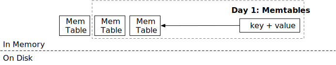
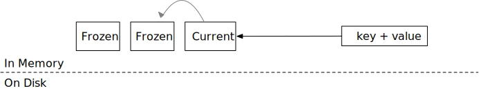
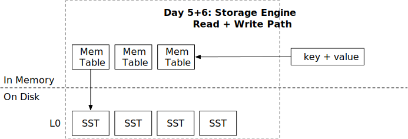
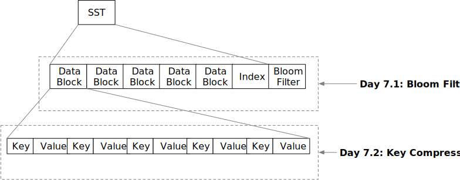
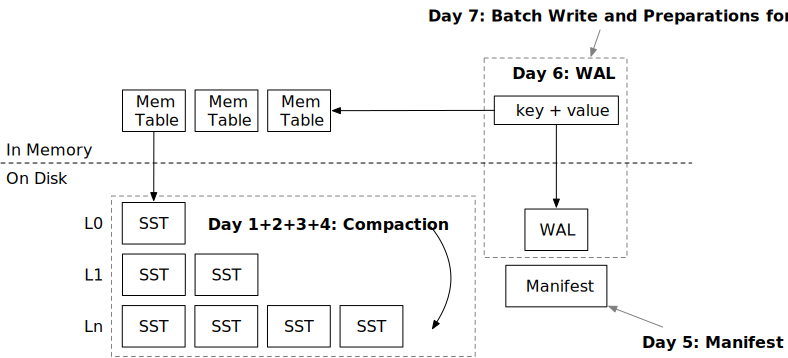
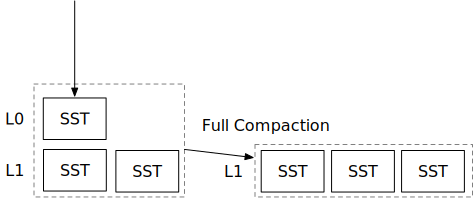
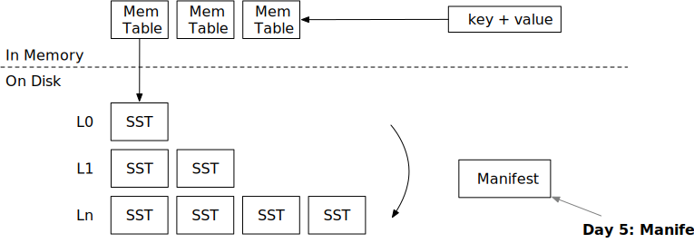

前言

本课程将指导您如何使用 Rust 编程语言构建一个简单的 LSM-Tree 存储引擎。
什么是 LSM，以及为什么选择 LSM？
日志结构合并树是一种维护键值对的数据结构。这种数据结构广泛应用于分布式数据库系统，如 TiDB 和 CockroachDB，作为它们的底层存储引擎。基于 LevelDB 的 RocksDB 是 LSM-Tree 存储引擎的一种实现，它提供了许多键值访问功能，并被用于许多生产系统中。
一般来说，LSM 树是一种对追加操作友好的数据结构。将 LSM 与其他键值数据结构（如红黑树和 B 树）进行比较更为直观。对于红黑树和 B 树，所有数据操作都是就地进行的。也就是说，当您想要更新与键对应的值时，引擎会用新值覆盖其原始内存或磁盘空间。但在 LSM 树中，所有的写操作，即插入、更新、删除，都是延迟应用到存储中的。引擎将这些操作批量处理为 SST（排序字符串表）文件，并将其写入磁盘。一旦写入磁盘，引擎就不会直接修改它们。在一个特定的后台任务——压缩过程中，引擎会合并这些文件以应用更新和删除。
这种架构设计使得 LSM 树易于操作。
- 数据在持久存储上是不可变的。并发控制更为简单。可以将后台任务（压缩）转移到远程服务器上。直接从云原生存储系统（如 S3）存储和提供数据也是可行的。
- 通过改变压缩算法，存储引擎可以在读取、写入和空间放大之间取得平衡。这种数据结构非常灵活，通过调整压缩参数，我们可以针对不同的工作负载优化 LSM 结构。
本课程将指导您如何使用 Rust 编程语言构建一个基于 LSM 树的存储引擎。
先决条件
- 您应该掌握 Rust 编程语言的基础知识。阅读 Rust 官方文档 就足够了。
- 您应该了解键值存储引擎的基本概念，即为什么我们需要复杂的设计来实现持久性。如果您之前没有数据库系统和存储系统的经验，可以在 PingCAP 人才计划 中实现 Bitcask。
- 了解 LSM 树的基础知识不是必须的，但我们建议您阅读一些相关内容，例如 LevelDB 的整体思路。事先了解这些概念将使您熟悉可变和不可变内存表、SST、压缩、WAL 等概念。
本教程您将学到什么
完成本课程后，您应深入理解基于 LSM 的存储系统的工作原理，获得设计此类系统的实践经验，并将所学知识应用于学习和职业生涯中。您将理解此类存储系统中的设计权衡，并找到设计满足您工作负载要求的 LSM 存储系统的最佳方法。本深度教程涵盖了现代存储系统（如 RocksDB）的所有关键实现细节和设计选择，基于作者在多个类似 LSM 存储系统中的经验，您将能够直接将所学知识应用于工业和学术领域。
结构
本教程是一个内容广泛的课程，分为多个部分（周）。每周有七章；您可以在 2 到 3 小时内完成每一章。每周的前六章将指导您构建一个工作系统，每周的最后一章将是一个 零食时间 章节，在您前六天构建的内容上实现一些简单的东西。每章都会有必做任务、检查您的理解 问题和额外任务。
测试
我们提供了一个完整的测试套件和一些 CLI 工具，供您验证解决方案的正确性。请注意，测试套件并不全面，您的解决方案在通过所有测试用例后可能并非 100% 正确。在实现系统的后续部分时，您可能需要修复之前的错误。我们建议您仔细思考您的实现，特别是在有多线程操作和竞态条件的情况下。
解决方案
我们在 mini-lsm 主仓库中提供了一个实现了教程要求的所有功能的解决方案。
Mini-LSM 课程概览
教程结构

本教程分为三个部分（周）。第一周，我们将重点介绍 LSM 存储引擎的存储结构和存储格式。第二周，我们将深入探讨压缩机制，并为存储引擎实现持久化支持。第三周，我们将实现多版本并发控制。
请查看 环境搭建 以设置环境。
LSM 概述
LSM 存储引擎通常包含三个部分：
- 预写日志（Write-ahead log），用于持久化临时数据以进行恢复。
- 磁盘上的 SST（Sorted String Tables），用于维护 LSM 树结构。
- 内存中的 Mem-table，用于批量处理小写操作。
存储引擎通常提供以下接口：
Put(key, value)：在 LSM 树中存储键值对。Delete(key)：删除键及其对应的值。Get(key)：获取与键对应的值。Scan(range)：获取一系列键值对。
为了确保持久性，
Sync()：确保sync之前的所有操作都持久化到磁盘。
一些引擎选择将 Put 和 Delete 合并为一个名为 WriteBatch 的操作，该操作接受一批键值对。
在本教程中，我们假设 LSM 树使用的是层级压缩算法，这是实际系统中常用的算法。
写路径

LSM 的写路径包含四个步骤：
- 将键值对写入预写日志，以便在存储引擎崩溃后可以恢复。
- 将键值对写入 memtable。完成 (1) 和 (2) 后，我们可以通知用户写操作已完成。
- （在后台运行）当 mem-table 满时，我们将它们冻结为不可变的 mem-table，并在后台将其刷新为磁盘上的 SST 文件。
- （在后台运行）引擎将某些级别的文件压缩到较低级别，以保持 LSM 树的良好形状，从而降低读放大。
读路径

当我们想要读取一个键时，
- 我们将首先从最新的到最旧的 mem-table 进行探测。
- 如果未找到键，我们将搜索包含 SST 的整个 LSM 树以查找数据。
有两种类型的读取：查找和扫描。查找在 LSM 树中查找一个键，而扫描遍历存储引擎中某个范围内的所有键。我们将在整个教程中涵盖这两者。
我们非常欢迎您的反馈。欢迎加入我们的Discord社区。发现问题？请在github.com/skyzh/mini-lsm上创建问题/拉取请求。版权所有 © 2022 - 2024 Alex Chi Z. 保留所有权利。
环境设置
入门代码和参考解决方案可在 https://github.com/skyzh/mini-lsm 获取。
安装 Rust
更多信息请参见 https://rustup.rs。
克隆仓库
git clone https://github.com/skyzh/mini-lsm
入门代码
cd mini-lsm/mini-lsm-starter
code .
安装工具
你需要最新稳定版的 Rust 来编译此项目。最低要求是 1.74。
cargo x install-tools
运行测试
cargo x copy-test --week 1 --day 1
cargo x scheck
现在，你可以继续开始 第一周：Mini-LSM。
我们非常欢迎您的反馈。欢迎加入我们的Discord社区。发现问题？请在github.com/skyzh/mini-lsm上创建问题/拉取请求。版权所有 © 2022 - 2024 Alex Chi Z. 保留所有权利。
第一周概览：Mini-LSM

在教程的第一周，您将构建存储引擎所需的存储格式，包括系统的读路径和写路径，并实现一个基于LSM的键值存储的工作实现。这部分共有7个章节（天）。
- 第一天：Memtable。您将实现内存中的读写路径。
- 第二天：合并迭代器。您将扩展第一天构建的内容，并为您的系统实现一个
scan接口。 - 第三天：块编码。现在我们开始磁盘结构的第一个步骤，并构建块的编码/解码。
- 第四天：SST编码。SST由块组成，在这一天结束时，您将拥有LSM磁盘结构的基本构建块。
- 第五天：读路径。现在我们既有内存结构也有磁盘结构，我们可以将它们结合起来，并为存储引擎实现一个完全工作的读路径。
- 第六天：写路径。在第五天，测试工具生成这些结构，而在第六天，您将自行控制SST的刷新。您将实现刷新到level-0 SST，并完成存储引擎的构建。
- 第七天：SST优化。我们将实现几个SST格式的优化，并提高系统的性能。
在本周结束时，您的存储引擎应该能够处理所有的get/scan/put请求。唯一缺少的部分是将LSM状态持久化到磁盘，以及在磁盘上更有效地组织SST的方法。您将拥有一个工作的Mini-LSM存储引擎。
我们非常欢迎您的反馈。欢迎加入我们的Discord社区。发现问题？请在github.com/skyzh/mini-lsm上创建问题/拉取请求。版权所有 © 2022 - 2024 Alex Chi Z. 保留所有权利。
Memtables

在本章中，您将：
- 基于跳表实现 memtables。
- 实现冻结 memtable 的逻辑。
- 为 memtables 实现 LSM 读取路径
get。
要将测试用例复制到启动代码并运行它们，
cargo x copy-test --week 1 --day 1
cargo x scheck
任务 1：跳表 Memtable
在这个任务中，您需要修改：
src/mem_table.rs
首先，让我们实现 LSM 存储引擎的内存结构——memtable。我们选用 crossbeam 的跳表实现 作为 memtable 的数据结构，这是因为它支持无锁的并发读写操作。我们不会深入讲解跳表的工作原理，简而言之，它是一个有序的键值映射，可以轻松支持并发读写。
crossbeam-skiplist 提供了与 Rust 标准库的 BTreeMap 类似的接口：insert、get 和 iter。唯一的区别是修改接口（即 insert）只需要跳表的不可变引用，而不是可变引用。因此，在您的实现中，不应在实现 memtable 结构时使用任何互斥锁。
您还会注意到 MemTable 结构没有 delete 接口。在 mini-lsm 实现中，删除表示为对应于空值的键，我们称之为 删除 tombstone。
在这个任务中，您需要实现 MemTable::get 和 MemTable::put 以启用 memtable 的修改。
我们使用 bytes crate 来存储 memtable 中的数据。bytes::Byte 类似于 Arc<[u8]>。当您克隆 Bytes 或获取 Bytes 的切片时，底层数据不会被复制，因此克隆它的成本很低。相反，它只是创建了对存储区域的新引用，当没有对该区域的引用时，存储区域将被释放。
任务 2：引擎中的单个 Memtable
在这个任务中，您需要修改：
src/lsm_storage.rs
现在，我们将添加我们的第一个数据结构，memtable，到 LSM 状态中。在 LsmStorageState::create 中，您会发现当创建 LSM 结构时，我们将初始化一个 id 为 0 的 memtable。这是初始状态中的 可变 memtable。在任何时候，引擎只有一个单一的可变 memtable。memtable 通常有一个大小限制（例如 256MB），当达到大小限制时，它将被冻结为不可变 memtable。
查看 lsm_storage.rs，您会发现有两个结构表示存储引擎：MiniLSM 和 LsmStorageInner。MiniLSM 是 LsmStorageInner 的薄包装。您将在 LsmStorageInner 中实现大部分功能，直到第 2 周的压缩。
LsmStorageState 存储当前 LSM 存储引擎的结构。目前，我们只使用 memtable 字段，它存储当前的可变 memtable。在这个任务中，您需要实现 LsmStorageInner::get、LsmStorageInner::put 和 LsmStorageInner::delete。它们都应该直接将请求分派到当前的 memtable。

您的 delete 实现应该简单地为该键放置一个空切片，我们称之为 删除 tombstone。您的 get 实现应该相应地处理这种情况。
要访问 memtable，您需要获取 state 锁。由于我们的 memtable 实现只需要 put 的不可变引用，因此您只需要在修改 memtable 时获取 state 的读锁。这允许多个线程并发访问 memtable。
任务 3：写路径 - 冻结 Memtable
在这个任务中，您需要修改：
src/lsm_storage.rs
src/mem_table.rs

Memtable 不能无限增长，当达到大小限制时，我们需要冻结它们（稍后刷新到磁盘）。您可能会在 LsmStorageOptions 中找到 memtable 的大小限制，它 等于 SST 的大小限制（不是 num_memtables_limit）。这不是一个硬限制，您应该尽力冻结 memtable。
在这个任务中，您需要在 memtable 中 put/delete 键时计算近似的 memtable 大小。这可以通过简单地添加 put 调用时键和值的总字节数来计算。如果一个键被放置了两次，尽管跳表只包含最新的值，您可以在近似 memtable 大小中计算两次。一旦 memtable 达到限制，您应该调用 force_freeze_memtable 来冻结 memtable 并创建一个新的。
因为可能有多个线程将数据写入存储引擎，force_freeze_memtable 可能从多个线程并发调用。您
合并迭代器

在本章中，您将：
- 实现 memtable 迭代器。
- 实现合并迭代器。
- 实现 LSM 读取路径
scan用于 memtables。
要将测试用例复制到初始代码并运行它们，
cargo x copy-test --week 1 --day 2
cargo x scheck
任务 1：Memtable 迭代器
在本章中，我们将实现 LSM scan 接口。scan 返回一个范围内的有序键值对，使用迭代器 API。在前一章中，您已经实现了 get API 和创建不可变 memtables 的逻辑，现在您的 LSM 状态应该有多个 memtables。您需要首先在单个 memtable 上创建迭代器，然后在所有 memtables 上创建合并迭代器，最后实现迭代器的范围限制。
在本任务中，您需要修改：
src/mem_table.rs
所有 LSM 迭代器都实现了 StorageIterator 特性。它有 4 个函数：key、value、next 和 is_valid。当迭代器创建时，其光标会停在某个元素上，key / value 将返回满足起始条件（即起始键）的 memtable/block/SST 中的第一个键。这两个接口将返回一个 &[u8] 以避免复制。请注意，此迭代器接口与 Rust 风格的迭代器不同。
next 将光标移动到下一个位置。is_valid 返回迭代器是否已到达末尾或出错。您可以假设只有在 is_valid 返回 true 时才会调用 next。会有一个 FusedIterator 包装器，用于阻止在迭代器无效时调用 next，以避免用户误用迭代器。
回到 memtable 迭代器。您应该已经发现迭代器没有任何生命周期与之关联。想象一下，您创建了一个 Vec 并调用 vec.iter()，迭代器类型将是类似 VecIterator<'a>，其中 'a 是 vec 对象的生命周期。这同样适用于 SkipMap，其 iter API 返回一个带有生命周期的迭代器。然而，在我们的情况下，我们不希望在迭代器上有这样的生命周期，以避免使系统过于复杂（且难以编译...）。
如果迭代器没有生命周期泛型参数，我们应该确保每当迭代器被使用时，底层 skiplist 对象没有被释放。唯一实现这一点的方法是将 Arc 对象放入迭代器本身。要定义这样的结构，
#![allow(unused)] fn main() { pub struct MemtableIterator { map: Arc>, iter: SkipMapRangeIter<'???>, } }
好了，问题来了：我们希望表达迭代器的生命周期与结构中的 map 相同。我们该怎么做呢？
这是您在本教程中遇到的第一个也是最棘手的 Rust 语言问题——自引用结构。如果可以写成这样：
#![allow(unused)] fn main() { pub struct MemtableIterator { // <- 带有生命周期 'this map: Arc>, iter: SkipMapRangeIter<'this>, } }
那么问题就解决了！您可以通过一些第三方库如 ouroboros 来实现这一点。它提供了一种定义自引用结构的简单方法。也可以使用不安全的 Rust 来实现这一点（实际上，ouroboros 本身在内部使用了不安全的 Rust...）
我们已经为您定义了自引用的 MemtableIterator 字段，您需要实现 MemtableIterator 和 Memtable::scan API。
任务 2：合并迭代器
在本任务中，您需要修改：
src/iterators/merge_iterator.rs
现在您有多个 memtables，并且您将创建多个 memtable 迭代器。您需要合并来自 memtables 的结果，并将每个键的最新版本返回给用户。
MergeIterator 在内部维护一个二叉堆。请注意，您需要处理错误（即当迭代器无效时）并确保最新版本的键值对出现。
例如，如果我们有以下数据：
iter1: b->del, c->4, d->5
iter2: a->1, b->2, c->3
iter3: e->4
合并迭代器输出的序列应该是：
a->1, b->del, c->4, d->5, e->4
合并迭代器的构造函数接受一个迭代器向量。我们假设索引较低的（即第一个）具有最新的数据。
在使用 Rust 二叉堆时，您可能会发现 peek_mut 函数很有用。
#![allow(unused)] fn main() { let Some(mut inner) = heap.peek_mut() { *inner += 1; // <- 对内部项进行一些修改 } // 当 PeekMut 引用被丢弃时，二叉堆会自动重新排序。 let Some(mut inner) = heap.peek_mut() { PeekMut::pop(inner) // <- 从堆中弹出 } }
一个常见的陷阱是错误处理。例如，
#![allow(unused)] fn main() { let Some(mut }
块

在本章中，您将：
- 实现 SST 块编码。
- 实现 SST 块解码和块迭代器。
要将测试用例复制到启动代码并运行它们，请执行以下操作：
cargo x copy-test --week 1 --day 3
cargo x scheck
任务 1：块构建器
您已经在前面两章中实现了 LSM 存储引擎的所有内存结构。现在是时候构建磁盘结构了。磁盘结构的基本单元是块。块通常为 4 KB 大小（大小可能因存储介质而异），相当于操作系统中的页面大小和 SSD 上的页面大小。一个块存储有序的键值对。一个 SST 由多个块组成。当 memtable 的数量超过系统限制时，它会将 memtable 刷新为 SST。在本章中，您将实现块的编码和解码。
在本任务中，您需要修改：
src/block/builder.rs
src/block.rs
我们教程中的块编码格式如下：
----------------------------------------------------------------------------------------------------
| 数据区 | 偏移区 | 额外 |
----------------------------------------------------------------------------------------------------
| 条目 #1 | 条目 #2 | ... | 条目 #N | 偏移 #1 | 偏移 #2 | ... | 偏移 #N | 元素数量 |
----------------------------------------------------------------------------------------------------
每个条目是一个键值对。
-----------------------------------------------------------------------
| 条目 #1 | ... |
-----------------------------------------------------------------------
| 键长度 (2B) | 键 (键长度) | 值长度 (2B) | 值 (变长) | ... |
-----------------------------------------------------------------------
键长度和值长度均为 2 字节，这意味着它们的最大长度为 65535。（内部存储为 u16）
我们假设键始终不为空，而值则可能为空。空值意味着在系统的其他部分看来，相应的键已被删除。对于 BlockBuilder 和 BlockIterator，我们只需将空值视为空值。
在每个块的末尾，我们将存储每个条目的偏移量和总条目数。例如，如果第一个条目位于块的第 0 个位置，第二个条目位于块的第 12 个位置。
-------------------------------
|偏移|偏移|元素数量|
-------------------------------
| 0 | 12 | 2 |
-------------------------------
块的尾部如上所示。每个数字存储为 u16。
块有一个大小限制，即 target_size。除非第一个键值对超过目标块大小，否则应确保编码的块大小始终小于或等于 target_size。（在提供的代码中，这里的 target_size 本质上是 block_size）
当调用 build 时，BlockBuilder 将生成数据部分和未编码的条目偏移量。这些信息将存储在 Block 结构中。由于键值条目以原始格式存储，偏移量存储在单独的向量中，这减少了在解码数据时不必要的内存分配和处理开销——您需要做的就是将原始块数据复制到 data 向量中，并每 2 字节解码条目偏移量，而不是创建类似 Vec<(Vec, Vec)> 的东西来在内存中存储一个块中的所有键值对。这种紧凑的内存布局非常高效。
在 Block::encode 和 Block::decode 中，您需要按照上述格式编码/解码块。
任务 2：块迭代器
在本任务中，您需要修改：
src/block/iterator.rs
现在我们有了一个编码的块，我们需要实现 BlockIterator 接口，以便用户可以在块中查找/扫描键。
BlockIterator 可以通过 Arc 创建。如果调用 create_and_seek_to_first，它将定位在块中的第一个键。如果调用 create_and_seek_to_key，迭代器将定位在第一个 >= 提供的键的键。例如，如果块中有 1, 3, 5。
#![allow(unused)] fn main() { let mut iter = BlockIterator::create_and_seek_to_key(block, b"2"); assert_eq!(iter.key(), b"3"); }
上述 seek 2 将使迭代器定位在下一个可用的键 2，即 3。
迭代器应从块中复制 key 并存储在迭代器内部（我们将来会有键压缩，您必须这样做）。对于值，您应该仅在迭代器中存储开始/结束偏移量，而不复制它们。
当调用 next 时，迭代器将移动到下一个位置。如果我们到达块的末尾，我们可以将 key 设置为空，并从 is_valid 返回 false，以便调用者可以切换到另一个块（如果可能）。
测试您的理解
- 在块中查找键的时间复杂度是多少？
- 在您的实现中，当查找不存在的键时，光标会停在什么位置？
- 因此，
Block只是一个原始数据向量和一个偏移向量。我们可以将它们改为Byte和Arc<[u16]>，并将所有迭代器接口改为返回Byte而不是&[u8]吗？（假设我们使用Byte::slice返回块的切片而不复制。）优点/缺点是什么？ - 在您的实现中，写入块的数字的字节序是什么？
- 您的实现是否容易受到恶意构建的块的影响？如果用户故意构建一个无效的块，是否会有无效的内存访问或 OOM？
- 一个块可以包含重复的键吗？
- 如果用户添加一个大于目标块大小的键会发生什么？
- 考虑 LSM 引擎构建在对象存储服务（S3）上的情况。您将如何优化/改变块格式和参数以使其适合此类服务？
- 你喜欢奶茶吗？为什么或为什么不？
我们不提供这些问题的参考答案，欢迎在 Discord 社区中讨论。
额外任务
- 反向迭代器。 您可以为
BlockIterator实现prev，以便能够反向迭代键值对。您还可以有一个反向合并迭代器和反向 SST 迭代器（在下一章），以便您的存储引擎可以进行反向扫描。
我们非常欢迎您的反馈。欢迎加入我们的Discord社区。发现问题？请在github.com/skyzh/mini-lsm上创建问题/拉取请求。版权所有 © 2022 - 2024 Alex Chi Z. 保留所有权利。
排序字符串表 (SST)

在本章中，您将：
- 实现 SST 编码和元数据编码。
- 实现 SST 解码和迭代器。
要复制测试用例到起始代码并运行它们，
cargo x copy-test --week 1 --day 4
cargo x scheck
任务 1：SST 构建器
在这个任务中，您需要修改：
src/table/builder.rs
src/table.rs
SST 由存储在磁盘上的数据块和索引块组成。通常，数据块是惰性加载的——它们在用户请求之前不会被加载到内存中。索引块也可以按需加载，但在本教程中，我们假设所有 SST 索引块（元块）都可以适应内存（实际上我们没有专门的索引块实现）。一般来说，一个 SST 文件的大小为 256MB。
SST 构建器类似于块构建器——用户将在构建器上调用 add。您应该在 SST 构建器内部维护一个 BlockBuilder 并在必要时拆分块。此外，您需要维护块元数据 BlockMeta，其中包括每个块的首尾键和偏移量。build 函数将编码 SST，使用 FileObject::create 将所有内容写入磁盘，并返回一个 SsTable 对象。
SST 的编码如下：
-------------------------------------------------------------------------------------------
| 数据块部分 | 元数据部分 | 额外部分 |
-------------------------------------------------------------------------------------------
| 数据块 | ... | 数据块 | 元数据 | 元数据块偏移量 (u32) |
-------------------------------------------------------------------------------------------
您还需要实现 SsTableBuilder 的 estimated_size 函数，以便调用者知道何时可以开始写入新的 SST。该函数不需要非常精确。假设数据块包含的数据远多于元数据块，我们可以简单地返回数据块的大小作为 estimated_size。
除了 SST 构建器，您还需要完成块元数据的编码/解码，以便 SsTableBuilder::build 可以生成有效的 SST 文件。
任务 2：SST 迭代器
在这个任务中，您需要修改：
src/table/iterator.rs
src/table.rs
与 BlockIterator 类似，您需要实现一个遍历 SST 的迭代器。请注意，您应该按需加载数据。例如，如果您的迭代器位于块 1，它不应在到达下一个块之前在内存中保留任何其他块内容。
SsTableIterator 应实现 StorageIterator 特性，以便将来可以与其他迭代器组合。
需要注意的一点是 seek_to_key 函数。基本上，您需要在块元数据上进行二分查找，以确定哪个块可能包含该键。可能该键在 LSM 树中不存在，因此块迭代器在查找后会立即失效。例如，
--------------------------------------
| 块 1 | 块 2 | 块元数据 |
--------------------------------------
| a, b, c | e, f, g | 1: a/c, 2: e/g |
--------------------------------------
我们建议仅使用每个块的第一个键进行二分查找，以简化您的实现。如果在该 SST 中进行 seek(b)，这很简单——通过二分查找，我们可以知道块 1 包含键 a <= keys < e。因此，我们加载块 1 并将块迭代器定位到相应位置。
但如果我们进行 seek(d)，我们将定位到块 1，如果仅使用第一个键作为二分查找标准，但在块 1 中查找 d 将到达块的末尾。因此，我们应该在查找后检查迭代器是否无效，并在必要时切换到下一个块。或者您可以利用最后一个键元数据直接定位到正确的块，这取决于您。
任务 3：块缓存
在这个任务中，您需要修改：
src/table/iterator.rs
src/table.rs
您可以在 SsTable 上实现一个新的 read_block_cached 函数。
我们使用 moka-rs 作为我们的块缓存实现。块通过 (sst_id, block_id) 作为缓存键进行缓存。您可以使用 try_get_with 从缓存中获取块（如果命中缓存）/填充缓存（如果未命中缓存）。如果有多个请求读取相同的块且缓存未命中，try_get_with 只会向磁盘发出一个读取请求，并将结果广播给所有请求。
此时，您可以更改表迭代器以使用 read_block_cached 而不是 read_block 来利用块缓存。
测试您的理解
- 在 SST 中查找键的时间复杂度是多少？
- 在您的实现中，当查找不存在的键时，游标会停在什么位置？
- 是否可能（或必要）对 SST 文件进行就地更新？
- 一个 SST 通常很大（即 256MB）。在这种情况下，复制/扩展
Vec的成本会很高。您的实现是否提前为 SST 构建器分配了足够的空间？您是如何实现的？ - 查看
moka块缓存，为什么它返回Arc而不是原始的Error？ - 使用块缓存是否保证内存中最多会有固定数量的块？例如，如果您有一个 4GB 的
moka块缓存和 4KB 的块大小，内存中会有超过 4GB/4KB 数量的块吗？ - 是否可以在 LSM 引擎中存储列式数据（即 100 列整数表）？当前的 SST 格式是否仍然是一个好的选择？
- 考虑 LSM 引擎构建在对象存储服务（如 S3）上的情况。您将如何优化/更改 SST 格式/参数和块缓存以使其适合此类服务？
- 目前，我们将所有 SST 的索引加载到内存中。假设您为索引保留了 16GB 内存，您能估计您的 LSM 系统可以支持的数据库的最大大小吗？（这就是为什么您需要索引缓存！）
我们不提供这些问题的参考答案，欢迎在 Discord 社区中讨论。
额外任务
- 探索不同的 SST 编码和布局。 例如，在 Lethe: Enabling Efficient Deletes in LSMs 论文中，作者为 SST 添加了二级键支持。
- 或者您可以使用 B+ 树作为 SST 格式，而不是排序块。
- 索引块。 将块索引和块元数据拆分为索引块，并按需加载它们。
- 索引缓存。 使用一个单独的缓存来存储索引，而不是数据块缓存。
- I/O 优化。 将块对齐到 4KB 边界，并使用直接 I/O 绕过系统页缓存。
我们非常欢迎您的反馈。欢迎加入我们的Discord社区。发现问题？请在github.com/skyzh/mini-lsm上创建问题/拉取请求。版权所有 © 2022 - 2024 Alex Chi Z. 保留所有权利。
读取路径

在本章中，您将：
- 将 SST 集成到 LSM 读取路径中。
- 使用 SST 实现 LSM 读取路径的
get方法。 - 使用 SST 实现 LSM 读取路径的
scan方法。
要复制测试用例到起始代码并运行它们，
cargo x copy-test --week 1 --day 5
cargo x scheck
任务 1：双合并迭代器
在此任务中，您需要修改：
src/iterators/two_merge_iterator.rs
您已经实现了一个合并迭代器，该迭代器合并相同类型的迭代器（即 memtable 迭代器）。现在我们已经实现了 SST 格式，我们既有磁盘上的 SST 结构，也有内存中的 memtable。当我们从存储引擎扫描时，我们需要将来自 memtable 迭代器和 SST 迭代器的数据合并到一个迭代器中。在这种情况下，我们需要一个 TwoMergeIterator，它可以合并两种不同类型的迭代器。
您可以在 two_merge_iter.rs 中实现 TwoMergeIterator。由于这里只有两个迭代器，我们不需要维护一个二叉堆。相反，我们可以简单地使用一个标志来指示从哪个迭代器读取。与 MergeIterator 类似，如果两个迭代器中都找到了相同的键，则第一个迭代器优先。
任务 2：读取路径 - 扫描
在此任务中，您需要修改：
src/lsm_iterator.rs
src/lsm_storage.rs
在实现 TwoMergeIterator 之后，我们可以将 LsmIteratorInner 的类型改为：
#![allow(unused)] fn main() { type LsmIteratorInner = TwoMergeIterator, MergeIterator>; }
这样，LSM 存储引擎的内部迭代器将是一个结合了 memtable 和 SST 数据的迭代器。
请注意，我们的 SST 迭代器不支持传递结束边界。因此，您需要在 LsmIterator 中手动处理 end_bound。您需要修改 LsmIterator 逻辑，当内部迭代器的键达到结束边界时停止。
我们的测试用例将在 l0_sstables 中生成一些 memtable 和 SST，您需要在本任务中正确扫描所有这些数据。在下一章之前，您不需要刷新 SST。因此，您可以继续修改 LsmStorageInner::scan 接口，创建一个合并迭代器遍历所有 memtable 和 SST，以完成存储引擎的读取路径。
因为 SsTableIterator::create 涉及 I/O 操作，可能较慢，我们不希望在 state 关键部分执行此操作。因此，您应该首先读取 state 并克隆 LSM 状态快照的 Arc。然后，您应该释放锁。之后，您可以遍历所有 L0 SST，为每个 SST 创建迭代器，然后创建一个合并迭代器来检索数据。
#![allow(unused)] fn main() { fn scan(&self) { let snapshot = { let guard = self.state.read(); Arc::clone(&guard) }; // 创建迭代器并定位它们 } }
在 LSM 存储状态中，我们仅在 l0_sstables 向量中存储 SST id。您需要从 sstables 哈希映射中检索实际的 SST 对象。
任务 3：读取路径 - Get
在此任务中，您需要修改：
src/lsm_storage.rs
对于 get 请求，它将作为在 memtable 中的查找，然后在 SST 上进行扫描。您可以在所有 SST 上创建一个合并迭代器，并在用户要查找的键上进行定位。定位有两种可能性：键与用户查找的相同，或者键不同/不存在。只有在键存在且与查找的键相同时，才应将值返回给用户。您还应减少状态锁的关键部分，如前一节所述。同时记得处理已删除的键。
测试您的理解
- 考虑用户有一个迭代器遍历整个存储引擎的情况，存储引擎大小为 1TB，因此扫描所有数据大约需要 1 小时。如果用户这样做会有什么问题？（这是一个很好的问题，我们将在教程的不同阶段多次询问它...）
- 一些 LSM 树存储引擎提供的另一个流行接口是 multi-get（或 vectored get）。用户可以传递他们想要检索的键列表。接口返回每个键的值。例如，
multi_get(vec!["a", "b", "c", "d"]) -> a=1,b=2,c=3,d=4。显然，一个简单的实现是对每个键进行单个 get。您将如何实现 multi-get 接口，以及您可以进行哪些优化以使其更高效？（提示：在 get 过程中的一些操作只需要对所有键执行一次，除此之外，您可以考虑改进磁盘 I/O 接口以更好地支持此 multi-get 接口）。
我们没有提供这些问题的参考答案，欢迎在 Discord 社区中讨论。
额外任务
- 动态分派的代价。 实现一个
Box版本的合并迭代器，并进行基准测试以查看性能差异。 - 并行定位。 创建合并迭代器需要加载所有底层 SST 的第一个块（当您创建
SSTIterator时）。您可以并行化创建迭代器的过程。
我们非常欢迎您的反馈。欢迎加入我们的Discord社区。发现问题？请在github.com/skyzh/mini-lsm上创建问题/拉取请求。版权所有 © 2022 - 2024 Alex Chi Z. 保留所有权利。
写入路径
在本章中，您将：
- 使用 L0 刷新实现 LSM 写入路径。
- 实现正确更新 LSM 状态的逻辑。
要将测试用例复制到启动代码并运行它们，
cargo x copy-test --week 1 --day 6
cargo x scheck
任务 1：将 Memtable 刷新到 SST
此时，我们已经准备好了所有内存中的结构和磁盘文件，存储引擎能够从这些结构中读取和合并数据。现在，我们将实现将数据从内存移动到磁盘（即所谓的刷新）的逻辑，并完成 Mini-LSM 第一周的教程。
在本任务中，您需要修改：
src/lsm_storage.rs
src/mem_table.rs
您需要修改 LSMStorageInner::force_flush_next_imm_memtable 和 MemTable::flush。在 LSMStorageInner::open 中，如果 LSM 数据库目录不存在，您需要创建它。要刷新一个 memtable 到磁盘，我们需要做三件事：
- 选择一个 memtable 进行刷新。
- 创建一个与 memtable 对应的 SST 文件。
- 从不可变 memtable 列表中移除该 memtable，并将 SST 文件添加到 L0 SST 中。
我们还没有解释什么是 L0（第 0 层）SST。一般来说，它们是直接作为 memtable 刷新结果创建的 SST 文件集合。在本教程的第一周，我们只会在磁盘上有 L0 SST。我们将在第二周深入探讨如何使用分级或分层结构在磁盘上高效组织它们。
请注意，创建 SST 文件是一个计算密集型且成本高昂的操作。我们不想长时间持有 state 读/写锁，因为它可能会阻塞其他操作并在 LSM 操作中产生巨大的延迟峰值。此外，我们使用 state_lock 互斥锁来序列化 LSM 树中的状态修改操作。在本任务中，您需要仔细考虑如何使用这些锁来确保 LSM 状态修改无竞争条件，同时最小化关键部分。
我们没有并发测试用例，您需要仔细考虑您的实现方式。还要记住，不可变 memtable 列表中的最后一个 memtable 是最早的一个，应该是您要刷新的那个。
剧透：L0 刷新伪代码
#![allow(unused)] fn main() { fn flush_l0(&self) { let _state_lock = self.state_lock.lock(); let memtable_to_flush; let snapshot = { let guard = self.state.read(); memtable_to_flush = guard.imm_memtables.last(); }; let sst = memtable_to_flush.flush()?; { let guard = self.state.write(); guard.imm_memtables.pop(); guard.l0_sstables.insert(0, sst); }; } }
任务 2：触发刷新
在本任务中，您需要修改：
src/lsm_storage.rs
src/compact.rs
当内存中 memtable（不可变 + 可变）的数量超过 LSM 存储选项中的 num_memtable_limit 时，您应该将最早的 memtable 刷新到磁盘。这是由后台的刷新线程完成的。刷新线程将与 MiniLSM 结构一起启动。我们已经实现了启动线程和正确停止线程所需的代码。
在本任务中，您需要在 compact.rs 中实现 LsmStorageInner::trigger_flush，在 lsm_storage.rs 中实现 MiniLsm::close。trigger_flush 将每 50 毫秒执行一次。如果 memtable 数量超过限制，您应该调用 force_flush_next_imm_memtable 来刷新一个 memtable。当用户调用 close 函数时，您应该等待刷新线程（以及第二周的压缩线程）完成。
任务 3：过滤 SST
现在您有了一个完全可用的存储引擎，并且可以使用 mini-lsm-cli 与您的存储引擎进行交互。
cargo run --bin mini-lsm-cli -- --compaction none
然后，
fill 1000 3000
get 2333
flush
fill 1000 3030
get 2333
flush
get 2333
scan 2000 2333
如果您填充更多数据，您可以看到您的刷新线程正在工作，并自动刷新 L0 SST，而无需使用 flush 命令。
最后，让我们在结束本周之前，在过滤 SST 上实现一个简单的优化。根据用户提供的键范围，我们可以轻松过滤掉一些不包含该键范围的 SST，这样我们就不需要在合并迭代器中读取它们。
在本任务中，您需要修改：
src/lsm_storage.rs
src/iterators/*
src/lsm_iterator.rs
您需要更改读取路径函数，以跳过不可能包含键/键范围的 SST。您需要为您的迭代器实现 num_active_iterators，以便测试用例可以检查您的实现是否正确。对于 MergeIterator 和 TwoMergeIterator，它是所有子迭代器的 num_active_iterators 的总和。请注意，如果您没有修改 MergeIterator 启动代码中的字段，还要考虑 MergeIterator::current。对于 LsmIterator 和 FusedIterator，只需从内部迭代器返回活动迭代器的数量。
您可以实现像 range_overlap 和 key_within 这样的辅助函数来简化您的代码。
测试您的理解
- 如果用户请求删除一个键两次会发生什么？
- 当迭代器初始化时，会有多少内存（或块数）被加载到内存中？
- 一些疯狂的用户想要分叉他们的 LSM 树。他们希望启动引擎来摄取一些数据，然后分叉它，以便获得两个相同的数据集，然后分别操作它们。一个简单但效率不高的实现方法是简单地将所有 SST 和内存结构复制到一个新目录并启动引擎。然而，请注意，我们从不修改磁盘文件，实际上可以重用父引擎的 SST 文件。您认为如何在不复制数据的情况下高效实现这个分叉功能？（查看 Neon 分支）。
- 想象一下，您正在构建一个多租户 LSM 系统，在单个 128GB 内存机器上托管 10k 个数据库。Memtable 大小限制设置为 256MB。对于这个设置，您需要多少内存用于 memtable？
- 显然，您没有足够的内存来容纳所有这些 memtable。假设每个用户仍然有自己的 memtable，您如何设计 memtable 刷新策略以使其工作？让所有这些用户共享同一个 memtable（即将租户 ID 编码为键前缀）是否有意义？
我们没有提供这些问题的参考答案，欢迎在 Discord 社区中讨论。
额外任务
- 实现写入/L0 停滞。 当 memtable 数量超过最大数量太多时，您可以阻止用户向存储引擎写入数据。您还可以在实现压缩后在第二周为 L0 表实现写入停滞。
- 前缀扫描。 您可以通过实现前缀扫描接口并使用前缀信息来过滤更多 SST。
我们非常欢迎您的反馈。欢迎加入我们的Discord社区。发现问题？请在github.com/skyzh/mini-lsm上创建问题/拉取请求。版权所有 © 2022 - 2024 Alex Chi Z. 保留所有权利。
小零食时间：SST 优化

在前一章中，您已经构建了一个支持 get/scan/put 的存储引擎。在本周末，我们将实现一些简单但重要的 SST 格式优化。欢迎来到 Mini-LSM 的第一周小零食时间！
在本章中，您将：
- 在 SST 上实现布隆过滤器，并将其集成到 LSM 读取路径
get中。 - 在 SST 块格式中实现键压缩。
要将测试用例复制到初始代码并运行它们，
cargo x copy-test --week 1 --day 7
cargo x scheck
任务 1：布隆过滤器
布隆过滤器是一种概率数据结构，维护一组键。您可以向布隆过滤器添加键，并且可以知道某个键可能存在/必须不存在于添加到布隆过滤器的键集合中。
通常需要有一个哈希函数来构造布隆过滤器，一个键可以有多个哈希值。让我们来看下面的例子。假设我们已经有了一些键的哈希值，并且布隆过滤器有 7 位。
[注：如果您想更好地理解布隆过滤器，请查看 这里]
hash1 = ((character - a) * 13) % 7
hash2 = ((character - a) * 11) % 7
b -> 6 4
c -> 5 1
d -> 4 5
e -> 3 2
g -> 1 3
h -> 0 0
如果我们插入 b, c, d 到 7 位布隆过滤器中，我们将得到：
位 0123456
插入 b 1 1
插入 c 1 1
插入 d 11
结果 0101111
当探测布隆过滤器时，我们为键生成哈希值，并查看相应的位是否已设置。如果所有位都设置为 true，则该键可能存在于布隆过滤器中。否则，该键必须不存在于布隆过滤器中。
对于 e -> 3 2，由于位 2 未设置，它不应在原始集合中。对于 g -> 1 3，因为两位都已设置，它可能存在也可能不存在于集合中。对于 h -> 0 0，两位（实际上是一位）都未设置，因此它不应在原始集合中。
b -> 可能（实际：是）
c -> 可能（实际：是）
d -> 可能（实际：是）
e -> 必须不（实际：否）
g -> 可能（实际：否）
h -> 必须不（实际：否）
记住在上一个章节的末尾，我们基于键范围实现了 SST 过滤。现在，在 get 读取路径上，我们还可以使用布隆过滤器来忽略不包含用户想要查找的键的 SST，从而减少从磁盘读取的文件数量。
在本任务中，您需要修改：
src/table/bloom.rs
在实现中，您将从键哈希（u32 数字）构建布隆过滤器。对于每个哈希，您需要设置 k 位。这些位是通过以下方式计算的：
#![allow(unused)] fn main() { let delta = (h >> 17) | (h << 15); // h 是键哈希 for _ in 0..k { // TODO: 使用哈希设置相应的位 h = h.wrapping_add(delta); } }
我们提供了所有进行数学运算的骨架代码。您只需要实现构建布隆过滤器和探测布隆过滤器的过程。
任务 2：在读取路径上集成布隆过滤器
在本任务中，您需要修改：
src/table/builder.rs
src/table.rs
src/lsm_storage.rs
对于布隆过滤器编码，您可以将布隆过滤器附加到 SST 文件的末尾。您需要在文件末尾存储布隆过滤器偏移量，并相应地计算元数据偏移量。
-----------------------------------------------------------------------------------------------------
| 块部分 | 元数据部分 |
-----------------------------------------------------------------------------------------------------
| 数据块 | ... | 数据块 | 元数据 | 元数据块偏移 | 布隆过滤器 | 布隆过滤器偏移 |
| | 变长 | u32 | 变长 | u32 |
-----------------------------------------------------------------------------------------------------
我们使用 farmhash crate 来计算键的哈希值。在构建 SST 时，您还需要通过使用 farmhash::fingerprint32 计算键哈希来构建布隆过滤器。您需要将布隆过滤器与块元数据进行编码/解码。您可以选择布隆过滤器的假阳性率为 0.01。除了初始代码中提供的字段外，您可能还需要添加新的字段。
之后，您可以修改 get 读取路径以基于布隆过滤器过滤 SST。
我们没有为此部分提供集成测试，您需要确保您的实现仍然通过所有之前的章节测试。
任务 3：键前缀编码 + 解码
在本任务中，您需要修改：
src/block/builder.rs
src/block/iterator.rs
由于 SST 文件按顺序存储键，用户存储的键可能具有相同的前缀，因此我们可以在 SST 编码中压缩前缀以节省空间。
我们将当前键与块中的第一个键进行比较。我们按以下方式存储键：
键重叠长度（u16） | 剩余键长度（u16） | 键（剩余键长度）
键重叠长度 表示与块中第一个键相同的字节数。例如，如果我们看到一条记录：5|3|LSM，其中块中的第一个键是 mini-something，我们可以恢复当前键为 mini-LSM。
完成编码后，您还需要在块迭代器中实现解码。除了初始代码中提供的字段外，您可能还需要添加新的字段。
测试您的理解
- 布隆过滤器如何帮助 SST 过滤过程？它能告诉您关于键的什么信息？（可能不存在/可能存在/必须存在/必须不存在）
- 考虑我们需要一个反向迭代器的情况。我们的键压缩会影响反向迭代器吗？
- 您可以在扫描中使用布隆过滤器吗？
- 相对于与块中的第一个键进行键前缀编码，与相邻键进行键前缀编码可能有什么优缺点？
我们没有为这些问题提供参考答案，欢迎在 Discord 社区中讨论。
我们非常欢迎您的反馈。欢迎加入我们的Discord社区。发现问题？请在github.com/skyzh/mini-lsm上创建问题/拉取请求。版权所有 © 2022 - 2024 Alex Chi Z. 保留所有权利。
第二周概览：压缩与持久化

在上一周，您已经实现了LSM存储引擎所需的所有结构，并且您的存储引擎已经支持读写接口。本周，我们将深入探讨SST文件的磁盘组织，并研究在系统中实现性能和成本效率的最佳方法。我们将用4天时间学习不同的压缩策略，从最简单的到最复杂的，然后实现存储引擎持久化的剩余部分。到本周末，您将拥有一个功能齐全且高效的LSM存储引擎。
本周我们有7个章节（天）：
- 第一天：压缩实现。您将把所有L0 SST合并为一个有序的运行。
- 第二天：简单层级压缩。您将实现一个经典的层级压缩算法，并使用压缩模拟器查看其效果。
- 第三天：分层/通用压缩。您将实现RocksDB的通用压缩算法，并理解其优缺点。
- 第四天：层级压缩。您将实现RocksDB的层级压缩算法。该压缩算法还支持部分压缩，以减少峰值空间使用。
- 第五天：清单。您将把LSM状态存储在磁盘上，并从中恢复。
- 第六天：预写日志（WAL）。用户请求将被路由到memtable和WAL，以便所有操作都能持久化。
- 第七天：写批处理和校验和。您将实现写批处理API（为第三周MVCC做准备）和所有存储格式的校验和。
压缩与读取放大
让我们先谈谈压缩。在上一部分中，您只是将memtable刷新到L0 SST。想象一下，您已经写入了千兆字节的数据，现在您有100个SST。每个读取请求（不带过滤）都需要从这些SST中读取100个块。这种放大是读取放大——为了一个get操作，您需要向磁盘发送的I/O请求数量。
为了减少读取放大，我们可以将所有L0 SST合并为一个更大的结构，这样就只需读取一个SST和一个块来检索请求的数据。假设我们仍然有这100个SST，现在，我们对这100个SST进行合并排序，生成另外100个SST，每个SST包含非重叠的键范围。这个过程就是压缩，这100个非重叠的SST就是一个有序运行。
为了更清楚地说明这个过程，让我们看一个具体的例子：
SST 1: 键范围 00000 - 键 10000, 1000 键
SST 2: 键范围 00005 - 键 10005, 1000 键
SST 3: 键范围 00010 - 键 10010, 1000 键
我们在LSM结构中有3个SST。如果我们需要访问键02333，我们将需要探测所有这3个SST。如果我们进行压缩，我们可能会得到以下3个新的SST：
SST 4: 键范围 00000 - 键 03000, 1000 键
SST 5: 键范围 03001 - 键 06000, 1000 键
SST 6: 键范围 06000 - 键 10010, 1000 键
这3个新的SST是通过合并SST 1、2和3创建的。我们可以得到一个有序的3000个键，然后将其分成3个文件，以避免有一个超级大的SST文件。现在我们的LSM状态有3个非重叠的SST，我们只需要访问SST 4来查找键02333。
压缩的两个极端与写入放大
从上面的例子中，我们有两个处理LSM结构的简单方法——完全不做压缩，以及在新SST刷新时总是进行完全压缩。
压缩是一个耗时的操作。它需要从某些文件中读取所有数据，并将相同数量的文件写入磁盘。这个操作需要大量的CPU资源和I/O资源。完全不做压缩会导致高读取放大，但它不需要写入新文件。总是进行完全压缩减少了读取放大，但它需要不断重写磁盘上的文件。

完全不压缩

新SST刷新时总是进行完全压缩
将memtable刷新到磁盘与写入磁盘的总数据量的比率是写入放大。也就是说，不进行压缩的写入放大比率为1x，因为一旦SST刷新到磁盘，它们就会留在那里。总是进行压缩的写入放大非常高。如果我们每次得到一个SST时都进行完全压缩，写入磁盘的数据量将是对刷新到磁盘的SST数量的平方。例如，如果我们向磁盘刷新了100个SST，我们将进行2个文件、3个文件、...、100个文件的压缩，实际写入磁盘的总数据量约为5000个SST。在这种情况下，写入100个SST后的写入放大将是50
压缩实现

在本章中，您将：
- 实现压缩逻辑，将一些文件合并并生成新文件。
- 实现更新 LSM 状态和管理文件系统上 SST 文件的逻辑。
- 更新 LSM 读取路径以结合 LSM 层级。
要将测试用例复制到启动代码并运行它们，
cargo x copy-test --week 2 --day 1
cargo x scheck
在阅读本章之前，查看第 2 周概览可能会有所帮助，以便对压缩有一个总体了解。
任务 1：压缩实现
在这个任务中，您将实现执行压缩的核心逻辑——将一组 SST 文件合并排序为一个有序运行。您需要修改：
src/compact.rs
具体来说，force_full_compaction 和 compact 函数。force_full_compaction 是决定要压缩哪些文件并更新 LSM 状态的压缩触发器。compact 执行实际的压缩任务，合并一些 SST 文件并返回一组新的 SST 文件。
您的压缩实现应获取存储引擎中的所有 SST，通过使用 MergeIterator 对它们进行合并，然后使用 SST 构建器将结果写入新文件。如果文件太大，您需要拆分 SST 文件。压缩完成后，您可以更新 LSM 状态，将所有新的有序运行添加到 LSM 树的第一层。并且，您需要移除 LSM 树中未使用的文件。在您的实现中，您的 SST 应仅存储在两个地方：L0 SST 和 L1 SST。也就是说，LSM 状态中的 levels 结构应仅有一个向量。在 LsmStorageState 中，我们已经初始化 LSM 在 levels 字段中具有 L1。
压缩不应阻塞 L0 刷新，因此您在合并文件时不应该获取状态锁。您应该仅在压缩过程结束时更新 LSM 状态时获取状态锁，并在修改状态后立即释放锁。
您可以假设用户会确保系统中只有一个压缩任务在运行。放入第 1 层的 SST 应按其第一个键排序，并且不应有重叠的键范围。
剧透：压缩伪代码
#![allow(unused)] fn main() { fn force_full_compaction(&self) { let ssts_to_compact = { let state = self.state.read(); state.l0_sstables + state.levels[0] }; let new_ssts = self.compact(FullCompactionTask(ssts_to_compact))?; { let state_lock = self.state_lock.lock(); let state = self.state.write(); state.l0_sstables.remove(/* 被压缩的那些 */); state.levels[0] = new_ssts; // 新 SST 添加到 L1 }; std::fs::remove(ssts_to_compact)?; } }
在您的压缩实现中，您目前只需处理 FullCompaction，其中任务信息包含您需要压缩的 SST。您还需要确保 SST 的顺序正确，以便最新版本的键将放入新的 SST 中。
因为我们总是压缩所有 SST，如果我们发现一个键的多个版本，我们可以简单地保留最新的一个。如果最新版本是一个删除标记，我们不需要在生成的 SST 文件中保留它。这不适用于接下来的几章中的压缩策略。
有一些事情您可能需要考虑。
- 您的实现如何处理与压缩并行的 L0 刷新？（在执行压缩时不获取状态锁，还需要考虑在压缩进行时产生的新 L0 文件。）
- 如果您的实现在压缩完成后立即移除原始 SST 文件，这会在系统中引起问题吗？（通常在 macOS/Linux 上不会，因为操作系统在没有任何文件句柄被持有之前不会实际删除文件。）
任务 2：Concat 迭代器
在这个任务中，您需要修改，
src/iterators/concat_iterator.rs
现在您已经在系统中创建了有序运行，可以对读取路径进行简单的优化。您并不总是需要为您的 SST 创建合并迭代器。如果 SST 属于一个有序运行，您可以创建一个 concat 迭代器，简单地按顺序迭代每个 SST 中的键，因为一个有序运行中的 SST 不包含重叠的键范围，并且它们按其第一个键排序。我们不想提前创建所有 SST 迭代器（因为这将导致一个块读取），因此我们只在这个迭代器中存储 SST 对象。
任务 3：与读取路径集成
在这个任务中，您需要修改，
src/lsm_iterator.rs
src/lsm_storage.rs
src/compact.rs
现在我们有了 LSM 树的两层结构，您可以更改读取路径以使用新的 concat 迭代器来优化读取路径。
您需要更改 LsmStorageIterator 的内部迭代器类型。之后，您可以构造一个合并 memtables 和 L0 SST 的合并迭代器，以及另一个合并该迭代器与 L1 concat 迭代器的合并迭代器。
您还可以更改您的压缩实现以利用 concat 迭代器。
您需要为 concat 迭代器实现 num_active_iterators，以便测试用例可以测试您的实现是否使用了 concat 迭代器，并且它应该始终为 1。
要交互式测试您的实现，
cargo run --bin mini-lsm-cli-ref -- --compaction none # 参考解决方案
cargo run --bin mini-lsm-cli -- --compaction none # 您的解决方案
然后，
fill 1000 3000
flush
fill 1000 3000
flush
full_compaction
fill 1000 3000
flush
full_compaction
get 2333
scan 2000 2333
测试您的理解
- 读取/写入/空间放大的定义是什么？（这在概览章节中有所涉及）
- 准确计算读取/写入/空间放大有哪些方法，估计它们有哪些方法？
- 即使用户请求删除键，键也会占用一些存储空间，这是正确的吗？
- 考虑到压缩会占用大量写入带宽和读取带宽，并可能干扰前台操作，推迟在有大量写入流量时进行压缩是一个好主意。在这种情况下，甚至有益于停止/暂停现有的压缩任务。您对此有何看法？（阅读 SILK: Preventing Latency Spikes in Log-Structured Merge Key-Value Stores 论文！）
- 使用/填充块缓存进行压缩是一个好主意吗？还是在压缩时完全绕过块缓存更好？
- 在系统中有一个
struct ConcatIterator有意义吗？ - 一些研究人员/工程师提议将压缩卸载到远程服务器或无服务器 lambda 函数。这样做的好处是什么，可能的挑战和性能影响是什么？（考虑压缩完成时会发生什么，以及下一个读取请求对块缓存的影响...）
我们不提供这些问题的参考答案，欢迎在 Discord 社区中讨论。
我们非常欢迎您的反馈。欢迎加入我们的Discord社区。发现问题？请在github.com/skyzh/mini-lsm上创建问题/拉取请求。版权所有 © 2022 - 2024 Alex Chi Z. 保留所有权利。
简单压缩策略

在本章中，您将：
- 实现一个简单的分层压缩策略，并在压缩模拟器上模拟它。
- 将压缩作为后台任务启动，并在系统中实现压缩触发器。
要复制测试用例到起始代码并运行它们，请执行以下命令：
cargo x copy-test --week 2 --day 2
cargo x scheck
在阅读本章之前，查看第2周概览可能会有所帮助，以便对压缩有一个总体了解。
任务1：简单分层压缩
在本章中，我们将实现我们的第一个压缩策略——简单分层压缩。在本任务中，您需要修改：
src/compact/simple_leveled.rs
简单分层压缩策略与原始LSM论文中的策略相似。它维护LSM树的多个层级。当一个层级（>= L1）过大时，它会将该层级的所有SST文件与下一层级合并。压缩策略由SimpleLeveledCompactionOptions中定义的3个参数控制。
size_ratio_percent：下层文件数量与上层文件数量的比率。实际上，我们应该计算文件的实际大小。然而，我们简化了公式，使用文件数量来使其更容易进行模拟。当比率过低（上层有太多文件）时，我们应该触发压缩。level0_file_num_compaction_trigger：当L0中的SST文件数量大于或等于此数量时，触发L0和L1的压缩。max_levels：LSM树中的层级数量（不包括L0）。
假设size_ratio_percent=200（下层应有上层文件数量的2倍），max_levels=3，level0_file_num_compaction_trigger=2，我们来看下面的例子。
假设引擎刷新了两个L0 SST文件。这达到了level0_file_num_compaction_trigger，您的控制器应触发L0->L1压缩。
--- 刷新后 ---
L0 (2): [1, 2]
L1 (0): []
L2 (0): []
L3 (0): []
--- 压缩后 ---
L0 (0): []
L1 (2): [3, 4]
L2 (0): []
L3 (0): []
现在，L2为空而L1有两个文件。L1和L2的大小比率为(L2/L1) * 100 = (0/2) * 100 = 0 < size_ratio_percent (200)。因此，我们将触发L1+L2压缩，将数据推到L2。同样适用于L2，这两个SST文件将在两次压缩后放置在最底层。
--- 压缩后 ---
L0 (0): []
L1 (0): []
L2 (2): [5, 6]
L3 (0): []
--- 压缩后 ---
L0 (0): []
L1 (0): []
L2 (0): []
L3 (2): [7, 8]
继续刷新SST文件，我们会发现：
L0 (0): []
L1 (0): []
L2 (2): [13, 14]
L3 (2): [7, 8]
此时，L3/L2= (1 / 1) * 100 = 100 < size_ratio_percent (200)。因此，我们需要触发L2和L3之间的压缩。
--- 压缩后 ---
L0 (0): []
L1 (0): []
L2 (0): []
L3 (4): [15, 16, 17, 18]
当我们刷新更多SST文件时，我们可能会达到以下状态：
--- 刷新后 ---
L0 (2): [19, 20]
L1 (0): []
L2 (0): []
L3 (4): [15, 16, 17, 18]
--- 压缩后 ---
L0 (0): []
L1 (0): []
L2 (2): [23, 24]
L3 (4): [15, 16, 17, 18]
因为L3/L2 = (4 / 2) * 100 = 200 >= size_ratio_percent (200)，我们不需要合并L2和L3，最终会达到上述状态。简单分层压缩策略总是压缩整个层级，并保持层级之间的扇出大小，使得下层总是上层的某个倍数。
我们已经初始化了LSM状态，使其具有max_level个层级。您应该首先实现generate_compaction_task，根据上述3个标准生成压缩任务。之后，实现apply_compaction_result。我们建议您先实现L0触发器，运行压缩模拟，然后实现大小比率触发器，再运行压缩模拟。要运行压缩模拟，请执行以下命令：
cargo run --bin compaction-simulator-ref simple # 参考解决方案
cargo run --bin compaction-simulator simple # 您的解决方案
模拟器将刷新一个L0 SST到LSM状态，运行您的压缩控制器生成压缩任务，然后应用压缩结果。每次刷新新的SST时，它会重复调用控制器，直到不需要安排压缩，因此您应确保您的压缩任务生成器会收敛。
在您的压缩实现中，应尽可能减少活动迭代器的数量（即使用concat迭代器）。同时，记住合并顺序很重要，您需要确保创建的迭代器在多个版本的键出现时按正确顺序生成键值对。
还要注意，实现中的一些参数是基于0的，而一些是基于1的。在使用level作为向量索引时要小心。
注意：我们没有为此部分提供细粒度的单元测试。您可以运行压缩模拟器，并与参考解决方案的输出进行比较，以查看您的实现是否正确。
任务2：压缩线程
在本任务中，您需要修改：
src/compact.rs
现在您已经实现了压缩策略，您需要在一个后台线程中运行它，以便在后台压缩文件。在compact.rs中，trigger_compaction每50毫秒被调用一次，您需要：
- 生成一个压缩任务，如果不需要安排任务，返回ok。
- 运行压缩并获取新SST文件的列表。
- 类似于您在前一章中实现的
force_full_compaction，更新LSM状态。
任务3：与读取路径集成
在本任务中，
分层压缩策略

在本章中，您将：
- 实现一种分层压缩策略，并在压缩模拟器上模拟它。
- 将分层压缩策略整合到系统中。
本章中讨论的分层压缩与RocksDB的通用压缩相同。我们将交替使用这两个术语。
要将测试案例复制到启动代码并运行它们，
cargo x copy-test --week 2 --day 3
cargo x scheck
在阅读本章之前，查看第2周概览可能会有所帮助，以便对压缩有一个大致的了解。
任务1：通用压缩
在本章中，您将实现RocksDB的通用压缩，这是一种分层压缩家族的压缩策略。与简单的层级压缩策略类似，我们仅使用文件数量作为此压缩策略的指标。当我们触发压缩任务时，我们总是包括一个完整的排序运行（层级）在压缩任务中。
任务1.0：前提条件
在这个任务中，您需要修改：
src/compact/tiered.rs
在通用压缩中，我们不在LSM状态中使用L0 SST。相反，我们直接将新的SST刷新到一个单一的排序运行（称为层级）。在LSM状态中，levels现在将包括所有层级，其中最低索引是最新刷新的SST。levels向量中的每个元素存储一个元组：层级ID（用作层级ID）和该层级中的SST。每次您刷新L0 SST时，您应该将SST刷新到向量前部的层级中。压缩模拟器根据第一个SST ID生成层级ID，您应该在您的实现中做同样的事情。
通用压缩仅在层级（排序运行）数量大于num_tiers时触发任务。否则，它不会触发任何压缩。
任务1.1：由空间放大比率触发
通用压缩的第一个触发是由空间放大比率触发的。正如我们在概览章节中讨论的，空间放大可以通过engine_size / last_level_size来估计。在我们的实现中，我们通过除最后一个层级外的所有层级大小 / 最后一个层级大小来计算空间放大比率，这样比率可以缩放到[0, +inf)而不是[1, +inf]。这也与RocksDB的实现一致。
当除最后一个层级外的所有层级大小 / 最后一个层级大小 >= max_size_amplification_percent * 100%时，我们需要触发一个完全压缩。
在您实现这个触发后，您可以运行压缩模拟器。您将看到：
cargo run --bin compaction-simulator tiered
--- 刷新后 ---
L3 (1): [3]
L2 (1): [2]
L1 (1): [1]
--- 压缩任务 ---
由空间放大比率触发的压缩: 200
L3 [3] L2 [2] L1 [1] -> [4, 5, 6]
--- 压缩后 ---
L4 (3): [3, 2, 1]
通过这个触发，我们仅在达到空间放大比率时触发完全压缩。在模拟结束时，您将看到：
--- 刷新后 ---
L73 (1): [73]
L72 (1): [72]
L71 (1): [71]
L70 (1): [70]
L69 (1): [69]
L68 (1): [68]
L67 (1): [67]
L40 (27): [39, 38, 37, 36, 35, 34, 33, 32, 31, 30, 29, 28, 27, 26, 25, 24, 23, 22, 13, 14, 15, 16, 17, 18, 19, 20, 21]
压缩模拟器中的num_tiers设置为3。然而，LSM状态中有远多于3个层级，这导致了大量的读取放大。
当前的触发仅减少了空间放大。我们需要向压缩算法添加新的触发器以减少读取放大。
任务1.2：由大小比率触发
下一个触发是大小比率触发。对于所有层级，如果有一个层级n使得所有前一层级的大小 / 这个层级 >= (100 + size_ratio) * 100%，我们将压缩所有n个层级。我们仅在合并的层级数量超过min_merge_width时进行此压缩。
通过这个触发，您将在压缩模拟器中观察到以下内容：
L207 (1): [207]
L204 (3): [203, 202, 201]
L186 (15): [185, 178, 179, 180, 181, 182, 183, 184, 158, 159, 160, 161, 162, 163, 164]
L114 (31): [113, 98, 99, 100, 101, 102, 103, 104, 105, 106, 107, 108, 109, 1分层压缩策略

在本章中，您将：
- 实现分层压缩策略并在压缩模拟器上模拟它。
- 将分层压缩策略整合到系统中。
要复制测试用例到起始代码并运行它们，
cargo x copy-test --week 2 --day 4
cargo x scheck
在阅读本章之前，查看第二周概览可能会有所帮助，以便对压缩有一个总体了解。
任务1：分层压缩
在第2章第2天，您已经实现了简单的分层压缩策略。然而，该实现存在一些问题：
- 压缩总是包含一个完整的层级。请注意，在完成压缩之前，您不能删除旧文件，因此，您的存储引擎在压缩过程中可能会使用2倍的存储空间（如果是完全压缩）。分层压缩也有同样的问题。在本章中，我们将实现部分压缩，即从上层选择一个SST进行压缩，而不是整个层级。
- SST可能会跨过空层级进行压缩。正如您在压缩模拟器中看到的，当LSM状态为空时，引擎刷新一些L0 SST，这些SST会首先被压缩到L1，然后从L1压缩到L2，等等。一个最佳策略是直接将SST从L0放置到尽可能低的层级，以避免不必要的写放大。
在本章中，您将实现一个生产就绪的分层压缩策略。该策略与RocksDB的分层压缩相同。您需要修改：
src/compact/leveled.rs
要运行压缩模拟器，
cargo run --bin compaction-simulator leveled
任务1.1：计算目标大小
在这种压缩策略中，您需要知道每个SST的第一个/最后一个键以及SST的大小。压缩模拟器将为您设置一些模拟SST以供访问。
您需要计算层级的目标大小。假设base_level_size_mb为200MB，层级数（不包括L0）为6。当LSM状态为空时，目标大小将是：
[0 0 0 0 0 200MB]
在底层级超过base_level_size_mb之前，所有其他中间层级的目标大小将为0。这个想法是，当数据总量较小时，创建中间层级是浪费的。
当底层级达到或超过base_level_size_mb时，我们将通过从大小中除以level_size_multiplier来计算其他层级的目标大小。假设底层级包含300MB数据，且level_size_multiplier=10。
0 0 0 0 30MB 300MB
此外，最多一个层级可以有低于base_level_size_mb的正目标大小。假设我们现在在最后一层有30GB文件，目标大小将是，
0 0 30MB 300MB 3GB 30GB
请注意，在这种情况下，L1和L2的目标大小为0，而L3是唯一一个目标大小低于base_level_size_mb的层级。
任务1.2：决定基础层级
现在，让我们解决简单分层压缩策略中SST可能会跨过空层级进行压缩的问题。当我们用较低层级压缩L0 SST时，我们不直接将其放入L1。相反，我们将其与第一个目标大小 > 0的层级进行压缩。例如，当目标层级大小为：
0 0 0 0 30MB 300MB
如果L0 SST的数量达到level0_file_num_compaction_trigger阈值，我们将用L5 SST压缩L0 SST。
现在，您可以生成L0压缩任务并运行压缩模拟器。
--- 刷新后 ---
L0 (1): [23]
L1 (0): []
L2 (0): []
L3 (2): [19, 20]
L4 (6): [11, 12, 7, 8, 9, 10]
...
--- 清单文件

在本章中，您将：
- 实现清单文件的编码和解码。
- 系统重启时从清单文件中恢复。
要将测试用例复制到启动代码并运行它们，请执行以下操作：
cargo x copy-test --week 2 --day 5
cargo x scheck
任务1：清单文件编码
系统使用清单文件记录引擎中发生的所有操作。目前，只有两种类型：合并和SST刷新。当引擎重启时，它会读取清单文件，重建状态，并加载磁盘上的SST文件。
存储LSM状态的方法有很多。最简单的方法是将完整状态存储到一个JSON文件中。每次进行合并或刷新新的SST时，我们可以将整个LSM状态序列化到一个文件中。这种方法的问题是，当数据库变得非常大（例如，10k个SST）时，将清单写入磁盘会非常慢。因此，我们设计了清单文件为仅追加文件。
在本任务中，您需要修改：
src/manifest.rs
我们使用JSON对清单记录进行编码。您可以使用serde_json::to_vec将清单记录编码为JSON，将其写入清单文件，并执行fsync。读取清单文件时，您可以使用serde_json::Deserializer::from_slice，它将返回一个记录流。您不需要存储记录长度等信息，因为serde_json可以自动找到记录的分隔。
清单文件格式如下：
| JSON记录 | JSON记录 | JSON记录 | JSON记录 |
再次注意，我们不记录每个记录的字节数。
引擎运行几小时后，清单文件可能会变得非常大。此时，您可以定期压缩清单文件以存储当前快照并截断日志。这是您可以作为额外任务实现的优化。
任务2：写入清单文件
现在，您可以继续修改您的LSM引擎，在必要时写入清单文件。在本任务中，您需要修改：
src/lsm_storage.rs
src/compact.rs
目前，我们只使用两种类型的清单记录：SST刷新和合并。SST刷新记录存储刷新到磁盘的SST ID。合并记录存储合并任务和生成的SST ID。每次将新文件写入磁盘时，首先同步文件和存储目录，然后写入清单并同步清单。清单文件应写入<路径>/MANIFEST。
要同步目录，您可以实现sync_dir函数，在该函数中可以使用File::open(dir).sync_all()?来同步目录。在Linux上，目录是一个包含目录中文件列表的文件。通过在目录上执行fsync，您将确保新写入（或删除）的文件在断电时对用户可见。
记得为后台合并触发（层级/简单/通用）和用户请求强制合并时写入合并清单记录。
任务3：关闭时刷新
在本任务中，您需要修改：
src/lsm_storage.rs
您需要实现close函数。如果self.options.enable_wal = false（我们将在下一章节介绍WAL），您应该在停止存储引擎之前将所有内存表刷新到磁盘，以确保所有用户更改都持久化。
任务4：从状态恢复
在本任务中，您需要修改：
src/lsm_storage.rs
现在，您可以修改open函数，从清单文件中恢复引擎状态。要恢复它，您需要首先生成需要加载的SST列表。您可以通过调用apply_compaction_result并在LSM状态中恢复SST ID来实现这一点。之后，您可以遍历状态并加载所有SST（更新sstables哈希映射）。在此过程中，您需要计算最大SST ID并更新next_sst_id字段。之后，您可以使用该ID创建一个新的内存表，并将ID加1。
如果您实现了层级合并，每次应用合并结果时，您可能已经对SST进行了排序。然而，在清单恢复过程中，您的排序逻辑会被破坏，因为在恢复过程中，您无法知道每个SST的起始键和结束键。要解决这个问题，您需要读取apply_compaction_result函数的in_recovery标志。在恢复过程中，您不应尝试检索SST的第一个键。在LSM状态恢复且所有SST打开后，您可以在恢复过程结束时进行排序。
可选地，您可以在清单中包含每个SST的起始键和结束键。RocksDB/BadgerDB使用了这种策略，因此在应用合并过程中您不需要区分恢复模式和正常模式。
您可以使用mini-lsm-cli测试您的实现。
cargo run --bin mini-lsm-cli
fill 1000 2000
close
cargo run --bin mini-lsm-cli
get 1500
测试您的理解
- 何时需要调用
fsync？为什么需要同步目录？ - 哪些地方需要写入清单文件？
- 考虑一个不使用清单文件的LSM引擎的替代实现。相反，它在每个文件的头部记录层级/层信息，每次重启时扫描存储目录，仅从目录中的文件恢复LSM状态。这种实现能否正确维护LSM状态，可能存在哪些问题/挑战？
- 目前，我们在创建合并迭代器之前创建所有SST/合并迭代器，这意味着在开始扫描过程之前，我们必须将所有层级中第一个SST的第一个块加载到内存中。我们在清单中有起始/结束键，是否可以利用这些信息延迟数据块的加载，从而加快返回第一个键值对的时间？
- 是否可以不在清单中存储层级/层信息？即，我们只存储清单中我们拥有的SST列表，而不存储层级信息，并使用键范围和时间戳信息（SST元数据）重建层级/层。
额外任务
- 清单压缩。 当清单文件中的日志数量过多时，您可以重写清单文件，只存储当前快照并将新日志追加到该文件中。
- 并行打开。 在收集到需要打开的SST列表后，您可以并行打开和解码它们，而不是逐个进行，从而加速恢复过程。
我们非常欢迎您的反馈。欢迎加入我们的Discord社区。发现问题？请在github.com/skyzh/mini-lsm上创建问题/拉取请求。版权所有 © 2022 - 2024 Alex Chi Z. 保留所有权利。
预写日志 (WAL)

在本章中，您将：
- 实现预写日志文件的编码和解码。
- 在系统重启时从 WAL 中恢复内存表。
要将测试用例复制到启动代码并运行它们，请执行以下命令：
cargo x copy-test --week 2 --day 6
cargo x scheck
任务 1：WAL 编码
在这个任务中，您需要修改：
src/wal.rs
在前一章中，我们已经实现了清单文件，使得 LSM 状态可以持久化。并且我们实现了 close 函数，在停止引擎之前将所有内存表刷新到 SST 中。现在，如果系统崩溃（即断电）怎么办？我们可以将内存表修改记录到 WAL（预写日志）中，并在重启数据库时恢复 WAL。只有当 self.options.enable_wal = true 时，WAL 才会启用。
WAL 编码只是一个键值对列表。
| key_len | key | value_len | value |
您还需要实现 recover 函数，从 WAL 读取并恢复内存表的状态。
请注意，我们使用 BufWriter 进行 WAL 写入。使用 BufWriter 可以减少进入操作系统的系统调用次数，从而减少写路径的延迟。当用户修改键时，数据不保证写入磁盘。相反，引擎仅保证在调用 sync 时数据是持久的。为了正确地将数据持久化到磁盘，您需要首先通过调用 flush() 将数据从缓冲写入器刷新到文件对象，然后使用 get_mut().sync_all() 对文件进行 fsync。请注意，您仅需要在引擎的 sync 被调用时进行 fsync。您不需要在每次写入数据时进行 fsync。
任务 2：集成 WAL
在这个任务中，您需要修改：
src/mem_table.rs
src/wal.rs
src/lsm_storage.rs
MemTable 有一个 WAL 字段。如果 wal 字段设置为 Some(wal)，您需要在更新内存表时追加到 WAL。在您的 LSM 引擎中，如果 enable_wal = true，您需要创建 WAL。您还需要在创建新内存表时使用 ManifestRecord::NewMemtable 记录更新清单。
您可以使用 create_with_wal 函数创建带有 WAL 的内存表。WAL 应写入存储目录中的 .wal。内存表 ID 应与作为 L0 SST 刷新的内存表的 SST ID 相同。
任务 3：从 WAL 恢复
在这个任务中，您需要修改：
src/lsm_storage.rs
如果启用了 WAL，您需要在加载数据库时基于 WAL 恢复内存表。您还需要实现数据库的 sync 函数。sync 的基本保证是引擎确定数据已持久化到磁盘（并且在重启时可以恢复）。为了实现这一点，您可以简单地同步当前内存表对应的 WAL。
cargo run --bin mini-lsm-cli -- --enable-wal
请记住从状态中恢复正确的 next_sst_id，它应为 max{memtable id, sst id} + 1。在您的 close 函数中，如果 enable_wal 设置为 true，则不应将内存表刷新到 SST，因为 WAL 本身提供持久性。您应该等到所有压缩和刷新线程退出后再关闭数据库。
测试您的理解
- 您应该在何时在引擎中调用
fsync？如果您在每次 put 键请求时调用fsync会发生什么？ - 在 SSD（固态驱动器）上，
fsync操作通常有多昂贵？ - 您何时可以告诉用户他们的修改（put/delete）已持久化？
- 您如何处理 WAL 中的损坏数据？
我们不提供这些问题的参考答案，欢迎在 Discord 社区中讨论。
我们非常欢迎您的反馈。欢迎加入我们的Discord社区。发现问题？请在github.com/skyzh/mini-lsm上创建问题/拉取请求。版权所有 © 2022 - 2024 Alex Chi Z. 保留所有权利。
批量写入与校验和
在前一章中，您已经构建了一个完整的基于LSM的存储引擎。在本周末，我们将实现一些简单但重要的存储引擎优化。欢迎来到Mini-LSM的第二周小吃时间！
在本章中，您将：
- 实现批量写入接口。
- 为块、SST元数据、清单文件和WAL添加校验和。
注意：本章没有单元测试。只要您通过所有之前的测试并确保校验和在文件格式中正确编码，就可以了。
任务1：批量写入接口
在这个任务中，我们将为本周的第三部分准备，添加一个批量写入API。您需要修改：
src/lsm_storage.rs
用户通过write_batch提供一批记录，这些记录将被写入数据库。记录是WriteBatchRecord>，因此可以是Bytes、&[u8]或Vec。有两种类型的记录：删除和插入。您可以像处理put和delete函数一样处理它们。
之后，您可以重构原始的put和delete函数，调用write_batch。
实现此功能后，您应该通过之前章节的所有测试用例。
任务2：块校验和
在这个任务中，您需要在编码SST时在每个块的末尾添加一个块校验和。您需要修改：
src/table/builder.rs
src/table.rs
SST的格式将变为：
---------------------------------------------------------------------------------------------------------------------------
| Block Section | Meta Section |
---------------------------------------------------------------------------------------------------------------------------
| data block | checksum | ... | data block | checksum | metadata | meta block offset | bloom filter | bloom filter offset |
| varlen | u32 | | varlen | u32 | varlen | u32 | varlen | u32 |
---------------------------------------------------------------------------------------------------------------------------
我们使用crc32作为校验和算法。您可以使用crc32fast::hash在构建块后生成块的校验和。
通常，当用户在存储选项中指定目标块大小时，该大小应包括块内容和校验和。例如，如果目标块大小是4096，校验和占用4字节，实际块内容目标大小应为4092。然而，为了避免破坏之前的测试用例并简化操作，在本教程中，我们将仍然使用目标块大小作为目标内容大小，并在块末尾简单地附加校验和。
在读取块时，您应该在read_block中正确验证校验和，为块内容生成切片。实现此功能后，您应该通过之前章节的所有测试用例。
任务3：SST元数据校验和
在这个任务中，您需要为布隆过滤器和块元数据添加块校验和：
src/table/builder.rs
src/table.rs
src/bloom.rs
----------------------------------------------------------------------------------------------------------
| Meta Section |
----------------------------------------------------------------------------------------------------------
| no. of block | metadata | checksum | meta block offset | bloom filter | checksum | bloom filter offset |
| u32 | varlen | u32 | u32 | varlen | u32 | u32 |
----------------------------------------------------------------------------------------------------------
您需要在Bloom::encode和Bloom::decode中在布隆过滤器的末尾添加校验和。请注意，我们的许多API接受一个现有的缓冲区，实现将写入该缓冲区，例如Bloom::encode。因此，您应该在写入编码内容之前记录布隆过滤器开始的偏移量，并且只校验布隆过滤器本身而不是整个缓冲区。
之后，您可以在块元数据的末尾添加校验和。您可能会发现，在元数据部分的开头添加元数据长度会很有帮助，这样在解码块元数据时更容易知道在哪里停止。
任务4：WAL校验和
在这个任务中，您需要修改：
src/wal.rs
我们将在预写日志中对每条记录进行校验和。为此，您有两种选择：
- 生成键值记录的缓冲区，并使用
crc32fast::hash一次性计算校验和。 - 一次写入一个字段（例如，键长度、键切片），并使用
crc32fast::Hasher在每个字段上增量计算校验和。
这取决于您的选择，您需要选择自己的冒险。两种方法应产生完全相同的结果，只要您正确处理小端/大端。新的WAL编码应如下：
| key_len | key | value_len | value | checksum |
任务5：清单文件校验和
最后，让我们在清单文件中添加一个校验和。清单文件类似于WAL，除了之前我们没有存储每条记录的长度。为了使实现更容易，我们现在在记录的开头添加一个记录长度的头，并在记录的末尾添加一个校验和。
新的清单文件格式如下：
| len | JSON record | checksum | len | JSON record | checksum | len | JSON record | checksum |
实现所有内容后，您应该通过之前章节的所有测试用例。本章没有提供新的测试用例。
测试您的理解
- 考虑一个LSM存储引擎只提供
write_batch作为写入接口（而不是单个put + delete）。是否可以如下实现：有一个单一的写入线程，通过mpsc通道接收器获取更改，所有线程将写入批处理发送到写入线程。写入线程是写入数据库的单一入口点。这种实现的优缺点是什么？（如果您这样做，恭喜您获得BadgerDB！） - 将所有块校验和一起放在SST文件的末尾而不是与块一起存储是否可以？为什么？
我们没有提供这些问题的参考答案，欢迎在Discord社区中讨论。
额外任务
- 恢复损坏时。如果出现校验和错误，以安全模式打开数据库，以便无法执行写入操作，并且可以检索未损坏的数据。
我们非常欢迎您的反馈。欢迎加入我们的Discord社区。发现问题？请在github.com/skyzh/mini-lsm上创建问题/拉取请求。版权所有 © 2022 - 2024 Alex Chi Z. 保留所有权利。
第3周概览：多版本并发控制
在这一部分，你将在前两周构建的LSM引擎基础上实现MVCC（多版本并发控制）。我们将通过在键中添加时间戳编码来维护一个键的多个版本，并更改引擎的某些部分，以确保根据是否有用户在读取旧版本，旧数据要么被保留，要么被垃圾回收。
本教程中MVCC部分的一般方法受到BadgerDB的启发，并部分基于其设计。
MVCC的关键在于在存储引擎中存储和访问一个键的多个版本。因此，我们需要将键格式更改为用户键 + 时间戳（u64）。在用户接口方面，我们需要提供新的API，帮助用户访问历史版本。总之，我们将为键添加一个单调递增的时间戳。
在前面的部分中，我们假设较新的键位于LSM树的较高层，而较旧的键位于较低层。在压缩过程中，如果在多个层级中发现多个版本，我们只保留最新版本的键，并且压缩过程将确保较新的键通过仅合并相邻层级/层保持在上层。在MVCC实现中，具有较大时间戳的键是最新键。在压缩过程中，如果没有任何用户正在访问数据库的旧版本，我们可以移除该键。尽管在较高层不保留最新版本的键对于MVCC LSM实现仍然可以产生正确的结果，但在我们的教程中，我们选择保持不变性，如果有多个版本的键，较新的版本将始终出现在较高层。
通常，有两种利用支持MVCC的存储引擎的方式。如果用户将引擎作为独立组件使用，并且不想手动分配键的时间戳，他们将使用事务API从存储引擎存储和检索数据。时间戳对用户是透明的。另一种方式是将存储引擎集成到系统中，用户自行管理时间戳。为了比较这两种方法，我们可以看看它们提供的API。我们使用BadgerDB的术语来描述这两种用法：隐藏时间戳的是非托管模式，而给用户完全控制的是托管模式。
托管模式API
get(key, read_timestamp) -> (value, write_timestamp)
scan(key_range, read_timestamp) -> iterator
put/delete/write_batch(key, timestamp)
set_watermark(timestamp) # 我们很快会谈到水印！
非托管/普通模式API
get(key) -> value
scan(key_range) -> iterator
start_transaction() -> txn
txn.put/delete/write_batch(key, timestamp)
如你所见，托管模式API要求用户在进行操作时提供时间戳。时间戳可能来自某些集中式时间戳系统，或其他系统的日志（例如，Postgres逻辑复制日志）。用户需要指定一个水印，这是引擎可以移除的版本以下的版本。
对于非托管API，它与我们之前实现的内容相同，除了用户需要通过创建事务来写入和读取数据。当用户创建一个事务时，他们可以获得数据库的一致状态（即快照）。即使其他线程/事务向数据库写入数据，这些数据对于正在进行的事务也是不可见的。存储引擎在内部管理时间戳，并不向用户暴露。
在这一周，我们将首先花3天时间对表格式和内存表进行重构。我们将把键格式更改为键切片和时间戳。之后，我们将实现必要的API，以提供一致的快照和事务。
这一部分有7章（天）：
- 第1天：时间戳键重构。你将把
key模块更改为MVCC版本，并重构你的系统以使用带时间戳的键。 - 第2天：快照读取 - 内存表和时间戳。你将重构内存表和写路径，以支持多版本读取/写入。
- 第3天：快照读取 - 事务API。你将实现事务API，并完成读取/写入路径的其余部分，以支持快照读取。
- 第4天：水印和垃圾回收。你将实现水印计算算法，并在压缩时实现垃圾回收，以移除旧版本。
- 第5天：事务和乐观并发控制。你将为所有事务创建私有工作空间，并批量提交它们，以便事务的修改对其他事务不可见。
- 第6天：可序列化快照隔离。你将实现OCC可序列化检查，以确保对数据库的修改是可序列化的，并中止违反可序列化性的事务。
- 第7天：压缩过滤器。在本周结束时，我们将把压缩时垃圾回收逻辑泛化为压缩过滤器，根据用户需求在压缩时移除数据。
我们非常欢迎您的反馈。欢迎加入我们的Discord社区。发现问题？请在github.com/skyzh/mini-lsm上创建问题/拉取请求。版权所有 © 2022 - 2024 Alex Chi Z. 保留所有权利。
时间戳键编码与重构
在本章中，你将：
- 重构你的实现以使用 key+ts 表示法。
- 使你的代码使用新的键表示法编译通过。
要运行测试用例，请执行以下命令：
cargo x copy-test --week 3 --day 1
cargo x scheck
注意：本章节没有完整的单元测试。你只需要确保代码能编译通过。
任务 0：使用 MVCC 键编码
你需要将键编码模块替换为 MVCC 键编码。我们从原始键模块中移除了一些接口，并为键实现了新的比较器。如果你按照前几章的指示操作，并且没有在键上使用 into_inner，你应该在所有重构后通过第 3 天的所有测试用例。否则，你需要仔细检查那些只比较键而不查看时间戳的地方。
具体来说，键类型定义已从：
#![allow(unused)] fn main() { pub struct Key>(T); }
改为：
#![allow(unused)] fn main() { pub struct Key>(T /* 用户键 */, u64 /* 时间戳 */); }
我们在键中关联了一个时间戳。我们仅在系统内部使用这种键表示法。在用户接口方面，我们不要求用户提供时间戳，因此某些结构仍然使用 &[u8] 而不是 KeySlice 在引擎中。稍后我们将介绍需要更改函数签名的地方。目前，你只需要运行以下命令：
cp mini-lsm-mvcc/src/key.rs mini-lsm-starter/src/
还有其他存储时间戳的方法。例如，我们仍然可以使用 pub struct Key>(T); 表示法，但假设键的最后 8 个字节是时间戳。你也可以将此作为额外任务实现。
替代键表示法： | 用户键 (可变长度) | 时间戳 (8 字节) | 在单个切片中
我们的键表示法： | 用户键切片 | 时间戳 (u64) |
在 key+ts 编码中，具有最小用户键和最大时间戳的键将首先排序。例如：
("a", 233) < ("a", 0) < ("b", 233) < ("b", 0)
任务 1：在块中编码时间戳
你首先会注意到的是，替换键模块后你的代码可能无法编译。在本章中，你只需要确保它能编译通过。在这个任务中，你需要修改以下文件：
src/block.rs
src/block/builder.rs
src/block/iterator.rs
你会注意到 raw_ref() 和 len() 已从键 API 中移除。取而代之的是，我们有 key_ref 来检索用户键的切片，以及 key_len 来检索用户键的长度。你需要重构你的块构建器和解码实现以使用新的 API。此外，你需要更改块编码以编码时间戳。在 BlockBuilder::add 中，你应该这样做。新的块条目记录将类似于：
键重叠长度 (u16) | 剩余键长度 (u16) | 键 (剩余键长度) | 时间戳 (u64)
你可以使用 raw_len 来估计键所需的空间，并将时间戳存储在用户键之后。
更改块编码后，你需要相应地更改 block.rs 和 iterator.rs 中的解码。
任务 2：在 SST 中编码时间戳
然后，你可以继续修改表格式，
src/table.rs
src/table/builder.rs
src/table/iterator.rs
具体来说，你需要更改块元数据编码以包含键的时间戳。所有其他代码保持不变。由于我们在所有函数的签名中使用 KeySlice（即 seek, add），新的键比较器应自动按用户键和时间戳排序键。
在你的表构建器中，你可以直接使用 key_ref() 来构建布隆过滤器。这自然为你的 SST 创建了一个前缀布隆过滤器。
任务 3：LSM 迭代器
由于我们使用关联的泛型类型来使大多数迭代器适用于不同的键类型（即 &[u8] 和 KeySlice<'_>），如果我们正确实现，我们不需要修改合并迭代器和连接迭代器。LsmIterator 是我们从内部键表示中去除时间戳并将键的最新版本返回给用户的地方。在这个任务中，你需要修改：
src/lsm_iterator.rs
目前，我们不修改 LsmIterator 的逻辑以仅保留键的最新版本。我们只是通过在传递给内部迭代器的用户键上附加时间戳使其编译通过，并在返回给用户时去除键的时间戳。目前，你的 LSM 迭代器的行为应该是向用户返回同一键的多个版本。
任务 4：内存表
目前，我们保持内存表的逻辑。我们向用户返回一个键切片，并以 TS_DEFAULT 刷新 SST。我们将在下一章中将内存表改为 MVCC。在这个任务中，你需要修改：
src/mem_table.rs
任务 5：引擎读取路径
在这个任务中，你需要修改，
src/lsm_storage.rs
现在我们在键中有一个时间戳，并且在创建迭代器时，我们需要使用带时间戳的键而不是仅用户键进行查找。你可以使用 TS_RANGE_BEGIN 创建一个键切片，这是最大的时间戳。
当你检查一个用户键是否在表中时，你可以仅比较用户键而不比较时间戳。
此时，你应该构建你的实现并通过所有第 1 周的测试用例。系统中存储的所有键将使用 TS_DEFAULT（即时间戳 0）。我们将在接下来的两章中使引擎完全多版本并通过所有测试用例。
我们非常欢迎您的反馈。欢迎加入我们的Discord社区。发现问题？请在github.com/skyzh/mini-lsm上创建问题/拉取请求。版权所有 © 2022 - 2024 Alex Chi Z. 保留所有权利。
快照读取 - Memtables 和时间戳
在本章中，您将：
- 重构您的 memtable/WAL 以存储键的多个版本。
- 实现新的引擎写入路径，为每个键分配一个时间戳。
- 使您的压缩过程能够处理多版本键。
- 实现新的引擎读取路径，返回键的最新版本。
在重构过程中，您可能需要根据需要将某些函数的签名从 &self 更改为 self: &Arc。
要运行测试用例，请执行以下操作：
cargo x copy-test --week 3 --day 2
cargo x scheck
注意：完成本章后，您还需要通过所有 <= 2.4 的测试。
任务 1：MemTable、预写日志和读取路径
在本任务中，您需要修改以下文件：
src/wal.rs
src/mem_table.rs
src/lsm_storage.rs
我们已经将引擎中的大多数键更改为 KeySlice，其中包含一个字节键和一个时间戳。然而，我们系统中的某些部分仍然没有考虑时间戳。在第一个任务中，您需要修改您的 memtable 和 WAL 实现以考虑时间戳。
首先，您需要更改存储在 memtable 中的 SkipMap 类型。
#![allow(unused)] fn main() { pub struct MemTable { // map: Arc>, map: Arc>, // Bytes -> KeyBytes // ... } }
之后，您可以继续修复所有编译错误以完成此任务。
MemTable::get
我们保留了 get 接口，以便测试用例仍然可以探测 memtable 中特定版本的键。完成此任务后，此接口不应在您的读取路径中使用。由于我们在跳表中存储了 KeyBytes（即 (Bytes, u64)），而用户探测的是 KeySlice（即 (&[u8], u64)），我们需要找到一种方法将后者转换为前者的引用，以便从跳表中检索数据。
为此，您可以使用不安全代码将 &[u8] 强制转换为静态的，并使用 Bytes::from_static 从静态切片创建一个字节对象。这是合理的，因为 Bytes 不会尝试释放切片内存，因为它被认为是静态的。
提示：将 u8 切片转换为 Bytes
#![allow(unused)] fn main() { Bytes::from_static(unsafe { std::mem::transmute(key.key_ref()) }) }
以前这不是问题，因为我们有 Bytes 和 &[u8]，其中 Bytes 实现了 Borrow<[u8]>。
MemTable::put
签名应更改为 fn put(&self, key: KeySlice, value: &[u8])，并且您需要在实现中将键切片转换为 KeyBytes。
MemTable::scan
签名应更改为 fn scan(&self, lower: Bound, upper: Bound) -> MemTableIterator。您需要将 KeySlice 转换为 KeyBytes，并将其用作 SkipMap::range 参数。
MemTable::flush
在将 memtable 刷新到 SST 时，您现在应该使用键的时间戳，而不是默认时间戳。
MemTableIterator
它现在应该存储 (KeyBytes, Bytes)，返回的键类型应该是 KeySlice。
Wal::recover 和 Wal::put
预写日志现在应该接受键切片而不是用户键切片。在序列化和反序列化 WAL 记录时，您应该将时间戳放入 WAL 文件中，并对时间戳和之前所有的字段进行校验和。
WAL 格式如下：
| key_len (exclude ts len) (u16) | key | ts (u64) | value_len (u16) | value | checksum (u32) |
LsmStorageInner::get
以前，我们将 get 实现为首先探测 memtables，然后扫描 SSTs。现在我们更改了 memtable 以使用新的 key-ts API，我们需要重新实现 get 接口。最简单的方法是创建一个合并迭代器，覆盖我们所拥有的所有内容——memtables、不可变 memtables、L0 SSTs 和其他级别的 SSTs，这与您在 scan 中所做的相同，只是我们对 SSTs 进行了布隆过滤器过滤。
LsmStorageInner::scan
您需要结合新的 memtable API，并将扫描范围设置为 (user_key_begin, TS_RANGE_BEGIN) 和 (user_key_end, TS_RANGE_END)。请注意，在处理排除边界时，您需要将迭代器正确地定位到下一个键（而不是当前相同时间戳的键）。
任务 2：写入路径
在本任务中，您需要修改以下文件：
src/lsm_storage.rs
我们在 LsmStorageInner 中有一个 mvcc 字段，其中包含我们在本周用于多版本并发控制所需的所有数据结构。当您打开一个目录并初始化存储引擎时，您需要创建该结构。
在您的 write_batch 实现中，您需要为写批处理中的所有键获取一个提交时间戳。您可以在逻辑开始时使用 self.mvcc().latest_commit_ts() + 1 获取时间戳，并在逻辑结束时使用 self.mvcc().update_commit_ts(ts) 更新下一个提交时间戳。为了确保所有写批处理具有不同的时间戳，并且新键位于旧键之上，您需要在函数开始时持有写锁 self.mvcc().write_lock.lock()，以便一次只有一个线程可以写入存储引擎。
任务 3：MVCC 压缩
在本任务中，您需要修改以下文件：
src/compact.rs
在前几章中，我们只保留键的最新版本，并在将键压缩到底层时删除键。使用 MVCC，我们现在有时间戳与键相关联，我们不能使用相同的压缩逻辑。
在本章中，您可以简单地删除删除键的逻辑。您可以暂时忽略 compact_to_bottom_level，并在压缩过程中保留键的所有版本。
此外，您需要以一种方式实现压缩算法，即具有不同时间戳的相同键放入同一个 SST 文件中，即使它超过了 SST 大小限制。这确保了如果在某个级别的 SST 中找到了一个键，它不会出现在该级别的其他 SST 文件中，从而简化了系统中许多部分的实现。
任务 4：LSM 迭代器
在本任务中，您需要修改以下文件：
src/lsm_iterator.rs
在前一章中，我们实现了 LSM 迭代器，将具有不同时间戳的相同键视为不同键。现在，我们需要重构 LSM 迭代器，以便仅返回从子迭代器检索到的键的最新版本。
您需要在迭代器中记录 prev_key。如果我们已经向用户返回了键的最新版本，我们可以跳过所有旧版本并继续下一个键。
此时，您应该通过前几章中的所有测试，除了持久性测试（2.5 和 2.6）。
测试您的理解
- MVCC 引擎中的
get与您在第 2 周构建的引擎有何不同？ - 在第 2 周，当
get时，您在找到键的第一个 memtable/level 处停止。在 MVCC 版本中，您可以这样做吗？ - 如何将
KeySlice转换为&KeyBytes？这是安全/合理的操作吗？ - 为什么我们需要在写入路径中持有写锁？
我们不提供这些问题的参考答案，欢迎在 Discord 社区中讨论。
额外任务
- Memtable Get 的早期停止。我们可以实现
get如下：如果在 memtable 中找到键的版本，我们可以停止搜索。这同样适用于 SSTs。
我们非常欢迎您的反馈。欢迎加入我们的Discord社区。发现问题？请在github.com/skyzh/mini-lsm上创建问题/拉取请求。版权所有 © 2022 - 2024 Alex Chi Z. 保留所有权利。 </step3
快照读取 - 引擎读取路径和事务 API
在本章中，您将：
- 基于前一章完成读取路径，以支持快照读取。
- 实现事务 API 以支持快照读取。
- 实现引擎恢复过程，以正确恢复提交时间戳。
最终，您的引擎将能够为用户提供存储键空间的一致视图。
在重构过程中，您可能需要根据需要将某些函数的签名从 &self 更改为 self: &Arc。
要运行测试用例，请执行以下操作：
cargo x copy-test --week 3 --day 3
cargo x scheck
注意：完成本章后，您还需要通过 2.5 和 2.6 的测试用例。
任务 1：带读取时间戳的 LSM 迭代器
本章的目标是实现类似以下功能：
#![allow(unused)] fn main() { let snapshot1 = engine.new_txn(); // 向引擎写入一些内容 let snapshot2 = engine.new_txn(); // 向引擎写入一些内容 snapshot1.get(/* ... */); // 我们可以检索引擎之前状态的一致快照 }
为此，我们可以在创建事务时记录读取时间戳（即最新的提交时间戳）。当我们在事务上进行读取操作时，我们只会读取小于或等于读取时间戳的所有键版本。
在本任务中，您需要修改：
src/lsm_iterator.rs
为此，您需要在 LsmIterator 中记录一个读取时间戳。
#![allow(unused)] fn main() { impl LsmIterator { pub(crate) fn new( iter: LsmIteratorInner, end_bound: Bound, read_ts: u64, ) -> Result { // ... } } }
并且您需要更改 LSM 迭代器 next 逻辑以找到正确的键。
任务 2：多版本扫描和获取
在本任务中，您需要修改：
src/mvcc.rs
src/mvcc/txn.rs
src/lsm_storage.rs
现在我们在 LSM 迭代器中有 read_ts，我们可以在事务结构上实现 scan 和 get，以便在存储引擎中的给定点读取数据。
我们建议您在 LsmStorageInner 结构中创建类似 scan_with_ts(/* 原始参数 */, read_ts: u64) 和 get_with_ts 的辅助函数（如有必要）。存储引擎上的原始 get/scan 应实现为创建一个事务（快照）并在此事务上进行 get/scan。调用路径如下：
LsmStorageInner::scan -> new_txn 和 Transaction::scan -> LsmStorageInner::scan_with_ts
要在 LsmStorageInner::scan 中创建事务，我们需要向事务构造函数提供一个 Arc。因此，我们可以将 scan 的签名从简单的 &self 更改为 self: &Arc，以便我们可以创建一个事务，例如 let txn = self.mvcc().new_txn(self.clone(), /* ... */)。
您还需要更改 scan 函数以返回 TxnIterator。我们必须确保用户迭代引擎时快照是活动的，因此 TxnIterator 存储快照对象。在 TxnIterator 内部，我们现在可以存储一个 FusedIterator。我们将在实现 OCC 时将其更改为其他内容。
目前您不需要实现 Transaction::put/delete，所有修改仍将通过引擎进行。
任务 3：在 SST 中存储最大时间戳
在本任务中，您需要修改：
src/table.rs
src/table/builder.rs
在 SST 编码中，您应在块元数据之后存储最大时间戳，并在加载 SST 时恢复它。这将帮助系统在恢复系统时决定最新的提交时间戳。
任务 4：恢复提交时间戳
现在我们在 SST 中有最大时间戳信息，在 WAL 中有时间戳信息，我们可以获得引擎启动前提交的最大时间戳，并在创建 mvcc 对象时使用该时间戳作为最新的提交时间戳。
如果未启用 WAL，您只需通过在 SST 中找到最大时间戳来计算最新的提交时间戳。如果启用了 WAL，您应该进一步迭代所有恢复的 memtable 并找到最大时间戳。
在本任务中，您需要修改：
src/lsm_storage.rs
我们没有为此部分提供测试用例。完成此部分后，您应该通过之前章节（包括 2.5 和 2.6）的所有持久性测试。
测试您的理解
- 到目前为止，我们假设我们的 SST 文件使用单调递增的 ID 作为文件名。使用
___.sst作为 SST 文件名是否可行？这可能会有哪些潜在问题？ - 考虑事务/快照的替代实现。在我们的实现中，我们在迭代器和事务上下文中使用
read_ts，以便用户始终可以访问基于时间戳的数据库的一个版本的一致视图。是否可以将当前 LSM 状态直接存储在事务上下文中以获取一致快照？（即，所有 SST ID、它们的级别信息以及所有 memtable + ts）这样做有什么优缺点？如果引擎没有 memtable 会怎样？如果引擎运行在像 S3 对象存储这样的分布式存储系统上会怎样？ - 考虑您正在实现 MVCC Mini-LSM 引擎的备份工具。仅仅复制所有 SST 文件而不备份 LSM 状态是否足够？为什么？
我们不提供这些问题的参考答案，欢迎在 Discord 社区中讨论。
我们非常欢迎您的反馈。欢迎加入我们的Discord社区。发现问题？请在github.com/skyzh/mini-lsm上创建问题/拉取请求。版权所有 © 2022 - 2024 Alex Chi Z. 保留所有权利。
水印与垃圾回收
在本章中，您将实现必要的结构来跟踪用户使用的最低读取时间戳，并在进行压缩时从 SST 中收集未使用的版本。
要运行测试用例，请执行以下命令：
cargo x copy-test --week 3 --day 4
cargo x scheck
任务1：实现水印
在本任务中，您需要修改：
src/mvcc/watermark.rs
水印结构用于跟踪系统中最低的读取时间戳。当创建新事务时，应调用 add_reader 将其读取时间戳添加到跟踪中。当事务中止或提交时，应将其从水印中移除。当调用 watermark() 时，水印结构会返回系统中最低的 read_ts。如果没有正在进行的事务，则简单返回 None。
您可以使用 BTreeMap 来实现水印。它维护一个计数器，用于记录每个 read_ts 有多少快照正在使用。B 树映射中不应有读者数为 0 的条目。
任务2：在事务中维护水印
在本任务中，您需要修改：
src/mvcc/txn.rs
src/mvcc.rs
在事务启动时，应将 read_ts 添加到水印中，并在事务调用 drop 时将其移除。
任务3：在压缩中进行垃圾回收
在本任务中，您需要修改：
src/compact.rs
现在我们有了系统的水印，我们可以在压缩过程中清理未使用的版本。
- 如果某个键的版本高于水印，则保留它。
- 对于所有低于或等于水印的键版本，应保留其最新版本。
例如，如果我们有水印=3 和以下数据：
a@4=del <- 高于水印
a@3=3 <- 低于或等于水印的最新版本
a@2=2 <- 可以移除，没有人会读取它
a@1=1 <- 可以移除，没有人会读取它
b@1=1 <- 低于或等于水印的最新版本
c@4=4 <- 高于水印
d@3=del <- 如果在压缩到底层时可以移除
d@2=2 <- 可以移除
如果我们对这些键进行压缩，我们将得到：
a@4=del
a@3=3
b@1=1
c@4=4
d@3=del (如果在压缩到底层时可以移除)
假设这些是引擎中的所有键。如果在 ts=3 时进行扫描，我们将在压缩前/后得到 a=3,b=1,c=4。如果在 ts=4 时进行扫描，我们将在压缩前/后得到 b=1,c=4。压缩不会也不应该影响读取时间戳 >= 水印的事务。
测试您的理解
- 在我们的实现中，我们通过事务的生命周期自行管理水印（所谓的非托管模式）。如果用户打算自行管理键时间戳和水印（例如，当他们有自己的时间戳生成器时），您需要在 write_batch/get/scan API 中验证他们的请求吗？在这种情况下，我们是否有任何架构假设可能难以维护？
- 为什么我们需要在事务迭代器中存储
Transaction的Arc？ - 完全从 SST 文件中移除键的条件是什么？
- 目前，我们仅在压缩到底层时移除键。还有其他时间可以移除键吗？（提示：您知道所有级别中每个 SST 的开始/结束键。）
- 考虑用户创建了一个长时间运行的事务，我们无法进行垃圾回收的情况。用户不断更新单个键。最终，单个 SST 文件中可能会有数千个键版本。这将如何影响性能，您将如何处理？
额外任务
- O(1) 水印。 您可以使用哈希映射或循环队列来实现摊销 O(1) 时间复杂度的水印结构。
我们非常欢迎您的反馈。欢迎加入我们的Discord社区。发现问题？请在github.com/skyzh/mini-lsm上创建问题/拉取请求。版权所有 © 2022 - 2024 Alex Chi Z. 保留所有权利。
事务与乐观并发控制
在本章中，您将全面实现 Transaction 接口。您的实现将维护一个事务内部的私有修改空间，并在提交时批量应用这些修改，确保事务内的所有变更在提交前仅对事务本身可见。我们仅在提交时进行冲突检测（即，可串行化冲突检测），这种策略被称为乐观并发控制。
要运行测试用例，请执行以下命令：
cargo x copy-test --week 3 --day 5
cargo x scheck
任务1：本地工作区 + Put 和 Delete
在这个任务中，您需要修改以下文件：
src/txn.rs
您可以通过将相应的键/值插入到 local_storage 中来实现 put 和 delete 操作。local_storage 是一个没有键时间戳的跳表内存表。注意，对于删除操作，应插入一个空值而非直接从跳表中移除该值。
任务2：Get 和 Scan
在这个任务中，您需要修改以下文件：
src/txn.rs
对于 get 操作，首先在本地存储中查找。如果找到值，根据是否为删除标记返回该值或 None。对于 scan 操作，您需要为跳表实现一个 TxnLocalIterator，类似于第1.1章节中为没有键时间戳的内存表实现的迭代器。您需要在 TxnIterator 中存储一个 TwoMergeIterator>。此外，由于 TwoMergeIterator 会保留子迭代器中的删除标记，您需要调整 TxnIterator 实现以正确处理删除操作。
任务3：Commit
在这个任务中，您需要修改以下文件：
src/txn.rs
我们假设事务仅在单线程中使用。一旦事务进入提交阶段，应将 self.committed 设置为 true，防止用户在事务上执行其他操作。如果事务已提交，put、delete、scan 和 get 操作应返回错误。
提交操作应简单地从本地存储中收集所有键值对，并向存储引擎提交一个写批处理。
任务4：原子 WAL
在这个任务中，您需要修改以下文件：
src/wal.rs
src/mem_table.rs
注意，commit 操作涉及生成一个写批处理，而目前，写批处理不保证原子性。您需要更改 WAL 实现，为写批处理生成一个头部和一个尾部。
新的 WAL 编码格式如下：
| HEADER | BODY | FOOTER |
| u32 | u16 | var | u64 | u16 | var | ... | u32 |
| batch_size | key_len | key | ts | value_len | value | more key-value pairs ... | checksum |
batch_size 表示 BODY 部分的大小。checksum 是 BODY 部分的校验和。
没有专门的测试用例来验证您的实现。只要您通过所有现有的测试用例并实现上述 WAL 格式，一切应该都没问题。
您应实现 Wal::put_batch 和 MemTable::put_batch。原来的 put 函数应将单个键值对视为一个批处理。也就是说，此时，您的 put 函数应调用 put_batch。
一个批处理应在同一个内存表和同一个 WAL 中处理，即使它超过了内存表的大小限制。
测试您的理解
- 通过到目前为止我们实现的所有功能，系统是否满足快照隔离？如果不是，我们还需要做什么来支持快照隔离？（注意：快照隔离不同于我们将在下一章讨论的可串行化快照隔离）
- 如果用户想要批量导入数据（例如，1TB？）如果他们使用事务 API 来完成这个任务，您会给他们什么建议？有没有机会针对这种情况进行优化？
- 什么是乐观并发控制？如果我们改为在 Mini-LSM 中实现悲观并发控制，系统会是什么样子？
- 如果系统崩溃并在磁盘上留下一个损坏的 WAL，您如何处理这种情况？
额外任务
- 溢出到磁盘。 如果事务的私有工作区变得太大，您可以将部分数据刷新到磁盘。
我们非常欢迎您的反馈。欢迎加入我们的Discord社区。发现问题？请在github.com/skyzh/mini-lsm上创建问题/拉取请求。版权所有 © 2022 - 2024 Alex Chi Z. 保留所有权利。
(部分)可序列化快照隔离
现在，我们将在事务提交时添加一个冲突检测算法，以便使引擎具有一定程度的可序列化性。
要运行测试用例，
cargo x copy-test --week 3 --day 6
cargo x scheck
让我们通过一个可序列化的例子来理解。假设我们在引擎中有两个事务：
txn1: put("key1", get("key2"))
txn2: put("key2", get("key1"))
数据库的初始状态是 key1=1, key2=2。可序列化意味着执行结果与按某种顺序依次执行事务的结果相同。如果我们先执行 txn1 再执行 txn2，我们将得到 key1=2, key2=2。如果我们先执行 txn2 再执行 txn1，我们将得到 key1=1, key2=1。
然而，按照我们当前的实现，如果这两个事务的执行重叠：
txn1: get key2 <- 2
txn2: get key1 <- 1
txn1: put key1=2, commit
txn2: put key2=1, commit
我们将得到 key1=2, key2=1。这无法通过这两个事务的串行执行产生。这种现象称为写偏斜。
通过可序列化验证，我们可以确保对数据库的修改对应于某个串行执行顺序，因此用户可以在系统上运行一些需要可序列化执行的关键工作负载。例如，如果用户在 Mini-LSM 上运行银行转账工作负载，他们期望任何时候的总金额保持不变。没有可序列化检查，我们无法保证这一不变性得到维持。
一种可序列化验证技术是记录系统中每个事务的读集和写集。我们在提交事务之前进行验证（乐观并发控制）。如果事务的读集与在其读取时间戳之后提交的任何事务重叠，那么我们验证失败，并中止该事务。
回到上面的例子，如果我们有 txn1 和 txn2 都在时间戳 = 1 开始。
txn1: get key2 <- 2
txn2: get key1 <- 1
txn1: put key1=2, commit ts = 2
txn2: put key2=1, start serializable verification
当我们验证 txn2 时，我们将遍历所有在其预期提交时间戳之前且在其读取时间戳之后开始的事务（在这种情况下，1 < ts < 3）。唯一满足条件的事务是 txn1。txn1 的写集是 key1，txn2 的读集是 key1。由于它们重叠，我们应该中止 txn2。
任务 1：跟踪 Get 和 Write Set 中的读集
在这个任务中，你需要修改：
src/mvcc/txn.rs
src/mvcc.rs
当调用 get 时，你应该将键添加到事务的读集中。在我们的实现中，我们存储键的哈希值，以减少内存使用并加快读集的探测速度，尽管这可能会导致两个键具有相同哈希时的假阳性。你可以使用 farmhash::hash32 为键生成哈希。请注意，即使 get 返回一个未找到的键，该键仍应在读集中跟踪。
在 LsmMvccInner::new_txn 中，如果 serializable=true，你应该为事务创建一个空的读/写集。
任务 2：在 Scan 中跟踪读集
在这个任务中，你需要修改：
src/mvcc/txn.rs
在本教程中，我们仅保证 get 请求的完全可序列化性。你仍然需要跟踪扫描的读集，但在某些特定情况下，你可能仍会得到不可序列化的结果。
为了理解为什么这很困难，让我们通过以下例子来说明。
txn1: put("key1", len(scan(..)))
txn2: put("key2", len(scan(..)))
如果数据库以初始状态 a=1,b=2 开始，我们应该得到 a=1,b=2,key1=2,key2=3 或 a=1,b=2,key1=3,key2=2。然而，如果事务执行如下：
txn1: len(scan(..)) = 2
txn2: len(scan(..)) = 2
txn1: put key1 = 2, commit, read set = {a, b}, write set = {key1}
txn2: put key2 = 2, commit, read set = {a, b}, write set = {key2}
这通过了我们的可序列化验证，并且不对应于任何串行执行顺序！因此，一个完全有效的可序列化验证需要跟踪键范围，并且仅在调用 get 时使用键哈希可以加速可序列化检查。请参阅奖励任务，了解如何正确实现可序列化检查。
任务 3：引擎接口和可序列化验证
在这个任务中，你需要修改：
src/mvcc/txn.rs
src/lsm_storage.rs
现在，我们可以继续在提交阶段实现验证。每次处理事务提交时，你应该获取 commit_lock。这确保只有一个事务进入事务验证和提交阶段。
你需要遍历所有提交时间戳在范围 (read_ts, expected_commit_ts)（排除边界）内的事务，并查看当前事务的读集是否与任何满足条件的事务的写集重叠。如果我们能提交事务，提交一个写批处理，并将该事务的写集插入到 self.inner.mvcc().committed_txns 中，其中键是提交时间戳。
如果 write_set 为空，你可以跳过检查。只读事务总是可以提交的。
你还应该修改 LsmStorageInner 中的 put、delete 和 write_batch 接口。我们建议你定义一个辅助函数 write_batch_inner 以处理写批处理。如果 options.serializable = true，put、delete 和面向用户的 write_batch 应该创建一个事务而不是直接创建一个写批处理。你的写批处理辅助函数还应该返回一个 u64 提交时间戳，以便 Transaction::Commit 可以正确地将提交的事务数据存储到 MVCC 结构中。
任务 4：垃圾回收
在这个任务中，你需要修改：
src/mvcc/txn.rs
当你提交一个事务时，你也可以清理提交的事务映射，以移除所有低于水印的事务，因为它们不会参与任何未来的可序列化验证。
测试你的理解
- 如果你有一些构建关系数据库的经验，你可能会考虑以下问题：假设我们基于 Mini-LSM 构建一个数据库，其中我们将关系表中的每一行存储为一个键值对（键：主键，值：序列化行）并启用可序列化验证，数据库系统是否直接获得了 ANSI 可序列化隔离级别的能力？为什么或为什么不？
- 我们在这里实现的是实际上是写快照隔离（参见 A critique of snapshot isolation），它保证了可序列化。是否存在执行是可序列化的，但会被写快照隔离验证拒绝的情况？
- 有些数据库声称它们通过仅跟踪 gets 和 scans 中访问的键（而不是键范围）来支持可序列化快照隔离。它们真的能防止由幻影引起的写偏斜吗？（好吧...实际上，我指的是 BadgerDB。）
我们不对这些问题提供参考答案，欢迎在 Discord 社区中讨论。
奖励任务
- 只读事务。 启用可序列化后，我们需要跟踪事务的读集。
- 精度/谓词锁定。 读
零食时间：压缩过滤器
恭喜！你做到了！在上一章中，你使你的 LSM 引擎具备了多版本功能，用户可以使用事务 API 与你的存储引擎进行交互。在本周末，我们将实现一些简单但重要的存储引擎功能。欢迎来到 Mini-LSM 的第三周零食时间！
在本章中，我们将把我们的压缩垃圾收集逻辑泛化为压缩过滤器。
目前，我们的压缩过程只是保留水位线以上的键和水位线以下键的最新版本。我们可以在压缩过程中添加一些魔法，帮助用户在后台自动收集一些未使用的数据。
考虑一个用户使用 Mini-LSM 存储数据库表的情况。表中的每一行都以前缀表名开头。例如：
table1_key1 -> 行
table1_key2 -> 行
table1_key3 -> 行
table2_key1 -> 行
table2_key2 -> 行
现在用户执行 DROP TABLE table1。引擎需要清理所有以 table1 开头的数据。
有很多方法可以实现这个目标。Mini-LSM 的用户可以扫描所有以 table1 开头的键，并请求引擎删除它们。然而，扫描一个非常大的数据库可能会很慢，并且会生成与现有键相同数量的删除墓碑。因此，扫描和删除不会释放被删除表占用的空间——相反，它会增加引擎中的数据，并且只有在墓碑到达引擎的底层时才能回收空间。
或者，他们可以创建列族（我们将在《余生》章节中讨论这个）。他们将每个表存储在一个列族中，这是一个独立的 LSM 状态，当用户删除表时，直接删除与该列族对应的 SST 文件。
在本教程中，我们将实现第三种方法：压缩过滤器。压缩过滤器可以在运行时动态添加到引擎中。在压缩过程中，如果找到与压缩过滤器匹配的键，我们可以在后台静默删除它。因此，用户可以向引擎附加一个 prefix=table1 的压缩过滤器，所有这些键将在压缩过程中被删除。
任务 1：压缩过滤器
在这个任务中，你需要修改：
src/compact.rs
你可以在 LsmStorageInner::compaction_filters 中遍历所有压缩过滤器。如果水位线以下键的第一个版本与压缩过滤器匹配，只需将其删除而不是保留在 SST 文件中。
要运行测试用例，
cargo x copy-test --week 3 --day 7
cargo x scheck
你可以假设用户不会获取前缀过滤器范围内的键。并且，他们不会扫描前缀范围内的键。因此，当用户请求前缀过滤器范围内的键时，返回错误值是可以的（即未定义行为）。
我们非常欢迎您的反馈。欢迎加入我们的Discord社区。发现问题？请在github.com/skyzh/mini-lsm上创建问题/拉取请求。版权所有 © 2022 - 2024 Alex Chi Z. 保留所有权利。
余生（待定）
这是进阶部分，深入剖析LSM存储引擎的优化和应用，使您的实现更加适合生产环境。我们仍在规划内容，这部分内容近期不会公开。
| 周 + 章节 | 主题 | 解决方案 | 启动代码 | 文档 |
|---|---|---|---|---|
| 4.1 | 基准测试 | |||
| 4.2 | 块压缩 | |||
| 4.3 | 简单移动与并行压缩 | |||
| 4.4 | 替代块编码 | |||
| 4.5 | 速率限制器与I/O优化 | |||
| 4.6 | 构建您自己的块缓存 | |||
| 4.7 | 构建您自己的跳表 | |||
| 4.8 | 异步引擎 | |||
| 4.9 | 基于IO-uring的I/O引擎 | |||
| 4.10 | 预取 | |||
| 4.11 | 键值分离 | |||
| 4.12 | 列族 | |||
| 4.13 | 分片 | |||
| 4.14 | 压缩优化 | |||
| 4.15 | 在Mini-LSM上实现SQL |
Mini-LSM v1
这是 Mini-LSM 教程的旧版本，我们将不再维护它。我们现在有了这个教程的新版本。我们保留这本书中的旧版本，以便搜索引擎可以保留页面索引，用户可以点击链接访问新版本的教程。
V1 教程概览
在本教程中，我们将用 7 天时间构建 LSM 树结构：
- 第 1 天：块编码。SST 由多个数据块组成。我们将实现块编码。
- 第 2 天：SST 编码。
- 第 3 天：MemTable 和合并迭代器。
- 第 4 天：块缓存和引擎。为了减少磁盘 I/O 并最大化性能，我们将使用 moka-rs 为 LSM 树构建块缓存。在这一天，我们将实现一个功能性（但非持久性）的键值引擎，支持
get、put、scan、delete操作。 - 第 5 天：压缩。现在是时候为 SST 维护一个分层结构了。
- 第 6 天：恢复。我们将实现 WAL 和清单，以便引擎在重启后可以恢复。
- 第 7 天：布隆过滤器和键压缩。它们是 LSM 树结构中广泛使用的优化。
开发指南
我们为您提供了入门代码（参见 mini-lsm-starter crate），我们将所有函数体替换为 unimplemented!()。您可以基于此入门代码开始您的项目。我们提供了测试用例，但它们非常简单。我们建议您仔细考虑您的实现并自己编写测试用例。
- 您可以使用
cargo x scheck运行所有测试用例并对您的代码库进行风格检查。 - 您可以使用
cargo x copy-test dayX将测试用例复制到入门代码中。
我们非常欢迎您的反馈。欢迎加入我们的Discord社区。发现问题？请在github.com/skyzh/mini-lsm上创建问题/拉取请求。版权所有 © 2022 - 2024 Alex Chi Z. 保留所有权利。
块构建器和块迭代器
这是 Mini-LSM 教程的旧版本，我们将不再维护它。我们现在有一个更好的版本，这一章节现在是 Mini-LSM 第一周第三天：块 的一部分。
在这一部分，你需要修改以下文件：
src/block/builder.rssrc/block/iterator.rssrc/block.rs
你可以使用 cargo x copy-test day1 将我们提供的测试用例复制到初始代码目录中。完成这部分后，使用 cargo x scheck 检查样式并运行所有测试用例。如果你想编写自己的测试用例，请在 block.rs 中编写一个新的模块 #[cfg(test)] mod user_tests { /* 你的测试用例 */ }。记得移除你修改的模块顶部的 #![allow(...)]，以便 cargo clippy 可以实际检查样式。
任务 1 - 块构建器
块是 LSM 中最小的读取单元。一般来说，块的大小为 4KB，类似于数据库页面。在每个块中，我们将存储一系列排序的键值对。
你需要修改 src/block/builder.rs 中的 BlockBuilder，以构建编码数据和偏移数组。块包含两部分：数据和偏移量。
---------------------------------------------------------------------
| 数据 | 偏移量 | 元数据 |
| ----- | ------- | ----- |
| 条目 | 条目 | 条目 | 条目 | 偏移 | 偏移 | 偏移 | 偏移 | 元素数量 |
---------------------------------------------------------------------
当用户向块添加键值对（即条目）时，我们需要将其序列化为以下格式：
-----------------------------------------------------------------------
| 条目 #1 | ... |
-----------------------------------------------------------------------
| 键长度 (2B) | 键 (键长度) | 值长度 (2B) | 值 (可变长度) | ... |
-----------------------------------------------------------------------
键长度和值长度均为 2 字节，这意味着它们的最大长度为 65535。（内部存储为 u16）
我们假设键永远不会为空，而值可以为空。空值意味着在系统的其他部分看来，相应的键已被删除。对于 BlockBuilder 和 BlockIterator，我们只需将其视为空值。
在每个块的末尾，我们将存储每个条目的偏移量和条目的总数。例如，如果第一个条目位于块的第 0 个位置，第二个条目位于块的第 12 个位置。
-------------------------------
|偏移|偏移|元素数量|
-------------------------------
| 0 | 12 | 2 |
-------------------------------
块的尾部将如上所示。每个数字都存储为 u16。
块有一个大小限制，即 target_size。除非第一个键值对超过目标块大小，否则应确保编码的块大小始终小于或等于 target_size。（在提供的代码中，这里的 target_size 实际上是 block_size）
当调用 build 时，BlockBuilder 将生成数据部分和未编码的条目偏移量。这些信息将存储在 Block 结构体中。由于键值条目以原始格式存储，偏移量存储在单独的向量中，这减少了不必要的内存分配和处理开销——你需要做的就是简单地将原始块数据复制到 data 向量中，并每 2 字节解码条目偏移量，而不是创建类似 Vec<(Vec, Vec)> 的结构来存储一个块中的所有键值对。这种紧凑的内存布局非常高效。
对于编码和解码部分，你需要修改 src/block.rs 中的 Block。具体来说，你需要实现 Block::encode 和 Block::decode，这将编码为/解码自上述图示的数据布局。
任务 2 - 块迭代器
给定一个 Block 对象，我们需要提取键值对。为此，我们创建一个块上的迭代器并找到我们需要的信息。
BlockIterator 可以通过一个 Arc 创建。如果调用 create_and_seek_to_first，它将定位在块中的第一个键。如果调用 create_and_seek_to_key，迭代器将定位在第一个大于等于提供的键的位置。例如，如果块中有 1, 3, 5。
#![allow(unused)] fn main() { let mut iter = BlockIterator::create_and_seek_to_key(block, b"2"); assert_eq!(iter.key(), b"3"); }
上面的 seek 2 将使迭代器定位在下一个可用的键 2，在这种情况下是 3。
迭代器应从块中复制 key 和 value 并存储在迭代器内部，以便用户可以通过 fn key(&self) -> &[u8] 直接访问本地存储的键和值，而无需额外的复制。
当调用 next 时，迭代器将移动到下一个位置。如果我们到达块的末尾，我们可以将 key 设置为空并从 is_valid 返回 false，以便调用者可以在可能的情况下切换到另一个块。
完成这部分后，你应该能够通过 block/tests.rs 中的所有测试。
额外任务
以下是你可以做的额外任务列表，以使块编码更加健壮和高效。
注意：在实现这部分后，某些测试用例可能无法通过。你可能需要编写自己的测试用例。
- 实现块校验和。在解码块时验证校验和。
- 压缩/解压块。在
build时压缩，在解码时解压。
我们非常欢迎您的反馈。欢迎加入我们的Discord社区。发现问题？请在github.com/skyzh/mini-lsm上创建问题/拉取请求。版权所有 © 2022 - 2024 Alex Chi Z. 保留所有权利。
SST 构建器和 SST 迭代器
这是 Mini-LSM 教程的旧版本，我们将不再维护它。我们现在有一个更好的版本，这一章节现在是 Mini-LSM 第一周第四天：排序字符串表（SST） 的一部分。
在这一部分，你需要修改以下文件：
src/table/builder.rssrc/table/iterator.rssrc/table.rs
你可以使用 cargo x copy-test day2 命令将我们提供的测试用例复制到初始代码目录中。完成这一部分后，使用 cargo x scheck 检查样式并运行所有测试用例。如果你想编写自己的测试用例，请在 table.rs 中编写一个新的模块 #[cfg(test)] mod user_tests { /* 你的测试用例 */ }。记得移除你修改的模块顶部的 #![allow(...)]，以便 cargo clippy 可以实际检查样式。
任务 1 - SST 构建器
SST（Sorted String Table）由存储在磁盘上的数据块和索引块组成。通常，数据块是惰性加载的——它们不会被加载到内存中，直到用户请求它们。索引块也可以按需加载，但在本教程中，我们假设所有 SST 索引块（元块）都可以适应内存。一般来说，一个 SST 文件的大小为 256MB。
SST 构建器类似于块构建器——用户将在构建器上调用 add。你应该在 SST 构建器内部维护一个 BlockBuilder，并在必要时拆分块。此外，你需要维护块元数据 BlockMeta，其中包括每个块的第一个键和每个块的偏移量。build 函数将编码 SST，使用 FileObject::create 将所有内容写入磁盘，并返回一个 SsTable 对象。注意，在第二部分中，你不需要实际将数据写入磁盘。只需将所有内容作为向量存储在内存中，直到我们实现块缓存（第四天，任务 5）。
SST 的编码如下：
-------------------------------------------------------------------------------------------
| 数据块部分 | 元数据部分 | 额外部分 |
-------------------------------------------------------------------------------------------
| 数据块 | ... | 数据块 | 元数据块 | ... | 元数据块 | 元数据块偏移量 (u32) |
-------------------------------------------------------------------------------------------
你还需要实现 SsTableBuilder 的 estimated_size 函数，以便调用者可以知道何时可以开始写入新的 SST。该函数不需要非常精确。假设数据块包含的数据远多于元数据块，我们可以简单地返回数据块的大小作为 estimated_size。
你还可以将块对齐到 4KB 边界，以便将来可能进行直接 I/O。这是一个可选的优化。
完成 任务 1 的推荐顺序如下：
- 在
src/table/builder.rs中实现SsTableBuilder- 在实现
SsTableBuilder之前，你可能想查看src/table.rs中的FileObject和BlockMeta。 - 对于
FileObject，你至少应该在第四天之前实现read、size和create（不需要磁盘 I/O）。 - 对于
BlockMeta，在编码/解码BlockMeta到/从缓冲区时，你可能想添加一些额外的字段。
- 在实现
- 在
src/table.rs中实现SsTable- 与上面相同，你不需要担心块缓存直到第四天。
完成 任务 1 后，你应该能够通过除两个迭代器测试之外的所有当前测试。
任务 2 - SST 迭代器
与 BlockIterator 类似，你需要实现一个遍历 SST 的迭代器。注意，你应该按需加载数据。例如，如果你的迭代器在块 1 上，它不应该在到达下一个块之前在内存中保留任何其他块内容。
SsTableIterator 应该实现 StorageIterator 特性，以便将来可以与其他迭代器组合。
需要注意的一点是 seek_to_key 函数。基本上，你需要在块元数据上进行二分搜索，以找到可能包含该键的块。可能该键不存在于 LSM 树中，因此块迭代器将在 seek 之后立即失效。例如，
----------------------------------
| 块 1 | 块 2 | 块元数据 |
----------------------------------
| a, b, c | e, f, g | 1: a, 2: e |
----------------------------------
如果我们在这个 SST 中执行 seek(b)，这很简单——使用二分搜索，我们可以知道块 1 包含键 a <= keys < e。因此，我们加载块 1 并将块迭代器定位到相应的位置。
但如果我们执行 seek(d)，我们将定位到块 1，但在块 1 中查找 d 将到达块的末尾。因此，我们应该在 seek 之后检查迭代器是否无效，并在必要时切换到下一个块。
额外任务
以下是你可以做的额外任务列表，以使块编码更健壮和高效。
注意：实现这一部分后，某些测试用例可能无法通过。你可能需要编写自己的测试用例。
- 实现索引校验和。在解码时验证校验和。
- 探索不同的 SST 编码和布局。例如，在 Lethe 论文中，作者向 SST 添加了辅助键支持。
我们非常欢迎您的反馈。欢迎加入我们的Discord社区。发现问题？请在github.com/skyzh/mini-lsm上创建问题/拉取请求。版权所有 © 2022 - 2024 Alex Chi Z. 保留所有权利。
Mem Table 和 合并迭代器
这是 Mini-LSM 教程的旧版本，我们将不再维护它。我们现在有了这个教程的更好版本，这一章节现在是 Mini-LSM 第一周第一天：内存表 和 Mini-LSM 第一周第二天：合并迭代器 的一部分。
在这一部分，你需要修改：
src/iterators/merge_iterator.rssrc/iterators/two_merge_iterator.rssrc/mem_table.rs
你可以使用 cargo x copy-test day3 将我们提供的测试用例复制到起始代码目录中。完成这一部分后，使用 cargo x scheck 检查风格并运行所有测试用例。如果你想编写自己的测试用例，在 table.rs 中编写一个新的模块 #[cfg(test)] mod user_tests { /* 你的测试用例 */ }。记得移除你修改的模块顶部的 #![allow(...)]，以便 cargo clippy 可以实际检查风格。
这是 LSM 树基本构建块的最后一部分。实现合并迭代器后，我们可以轻松地从数据结构的不同部分（内存表 + SST）合并数据，并获取所有数据的迭代器。在第四部分，我们将把这些内容组合在一起，制作一个真正的存储引擎。
任务 1 - 内存表
在本教程中，我们使用 crossbeam-skiplist 作为内存表的实现。跳表类似于链表，其中数据存储在列表节点中，不会在内存中移动。与使用单个指针指向下一个元素不同，跳表中的节点包含多个指针，允许用户“跳过某些元素”，从而实现 O(log n) 的搜索、插入和删除。
在存储引擎中，用户将创建数据结构的迭代器。通常，一旦用户修改了数据结构，迭代器就会失效（这是 C++ STL 和 Rust 容器的情况）。然而，跳表允许我们在访问和修改数据结构的同时进行操作，因此可能会在并发访问时提高性能。有些论文认为跳表不好，但数据在内存中保持原位的好特性可以使实现对我们来说更容易。
在 mem_table.rs 中，你需要基于 crossbeam-skiplist 实现一个内存表。请注意，内存表仅支持 get、scan 和 put，而不支持 delete。删除操作表示为 tombstone key -> 空值，实际数据将在压缩过程中删除（第 5 天）。请注意，所有 get、scan、put 函数只需要 &self，这意味着我们可以并发调用这些操作。
任务 2 - 内存表迭代器
你现在可以为 内存表 实现一个迭代器 内存表迭代器。内存表.iter(start, end) 将创建一个迭代器，返回范围内 start, end 内的所有元素。这里，start 是 std::ops::Bound，包含 3 种变体：Unbounded、Included(key)、Excluded(key)。std::ops::Bound 的表达能力消除了记忆 API 是否有闭区间或开区间的需要。
请注意，crossbeam-skiplist 的迭代器与 skiplist 本身的生存期相同，这意味着我们总是需要在使用迭代器时提供生存期。这很难使用。你可以使用 ouroboros crate 创建一个自引用结构，擦除生存期。你会发现 ouroboros 示例 很有帮助。
#![allow(unused)] fn main() { pub struct 内存表迭代器 { /// 持有对跳表的引用，以便迭代器有效。 map: Arc /// 然后迭代器的生存期应与 `内存表迭代器` 结构本身相同 iter: SkipList::Iter<'this> } }
你还需要将 Rust 风格的迭代器 API 转换为我们的存储迭代器。在 Rust 中，我们使用 next() -> Data。但在本教程中，next 没有返回值，数据应通过 key() 和 value() 获取。你需要想办法实现这一点。
剧透：内存表迭代器结构
#![allow(unused)] fn main() { #[self_referencing] pub struct 内存表迭代器 { map: Arc>, #[borrows(map)] #[not_covariant] iter: SkipMapRangeIter<'this>, item: (Bytes, Bytes), } }
我们有 map 作为对 skipmap 的引用，iter 作为结构的自引用项，item 作为迭代器中的最后一项。你可能想过使用类似 iter::Peekable 的东西，但它需要在获取键和值时使用 &mut self。因此，一种方法是（1）在初始化 内存表迭代器 时从迭代器获取元素，存储在 item 中（2）在调用 next 时，我们从内部迭代器的 next 获取元素，并将内部迭代器移动到下一个位置。
在这种设计中，你可能已经注意到，只要我们拥有迭代器对象，内存表就不能从内存中释放。在本教程中，我们假设用户操作是短期的，因此这不会引起大问题。请参阅额外任务以了解可能的改进。
你也可以考虑使用 AgateDB 的 skiplist 实现，它避免了创建自引用结构的问题。
任务 3 - 合并迭代器
现在你有很多内存表和 SSTs，你可能想将它们合并以获取键的最新出现。在 merge_iterator.rs 中，我们有 合并迭代器，它是一个合并所有相同类型迭代器的迭代器。new 函数中索引位置较低的迭代器具有更高的优先级，也就是说，如果我们有：
iter1: 1->a, 2->b, 3->c
iter2: 1->d
iter: 合并迭代器::create(vec![iter1, iter2])
最终迭代器将产生 1->a, 2->b, 3->c。iter1 中的数据将覆盖其他迭代器中的数据。
你可以使用 BinaryHeap 来实现这个合并迭代器。请注意，你永远不应该在二叉堆中放入任何无效的迭代器。一个常见的陷阱是错误处理。例如，
#![allow(unused)] fn main() { let Some(mut inner_iter) = self.iters.peek_mut() { inner_iter.next()?; // <- 会导致问题 } }
如果 next 返回错误（例如，由于磁盘故障、网络故障、校验和错误等），它就不再有效。然而，当我们离开 if 条件并将错误返回给调用者时，PeekMut 的
存储引擎与块缓存
这是 Mini-LSM 教程的旧版本，我们将不再维护它。我们现在有一个更好的版本，这一章节现在是 Mini-LSM 第一周第5天：读路径 和 Mini-LSM 第一周第6天：写路径 的一部分。
在这一部分，你需要修改：
src/lsm_iterator.rssrc/lsm_storage.rssrc/table.rs- 其他使用
SsTable::read_block的部分
你可以使用 cargo x copy-test day4 将我们提供的测试用例复制到初始代码目录中。完成这一部分后，使用 cargo x scheck 检查风格并运行所有测试用例。如果你想编写自己的测试用例，在 table.rs 中编写一个新的模块 #[cfg(test)] mod user_tests { /* 你的测试用例 */ }。记得删除你修改的模块顶部的 #![allow(...)]，以便 cargo clippy 可以实际检查风格。
任务1 - 插入和删除
在实现插入和删除之前，让我们回顾一下 LSM 树的工作原理。LSM 树的结构包括：
- 内存表：一个活跃的可变内存表和多个不可变的内存表。
- 预写日志：每个内存表对应一个 WAL。
- SST：内存表可以以 SST 格式刷新到磁盘。SST 分层组织。
在这一部分，我们只需要锁定，将条目（或墓碑）写入活跃的内存表。你可以在 lsm_storage.rs 中修改。
任务2 - 获取
要从 LSM 中获取一个值，我们可以简单地从活跃内存表、不可变内存表（从最新到最早）和所有 SST 中探测。为了减少临界区，我们可以持有读锁，将所有指向内存表和 SST 的指针从 LsmStorageInner 结构中复制出来，并在临界区外创建迭代器。创建迭代器和探测时要注意顺序。
任务3 - 扫描
要创建一个扫描迭代器 LsmIterator，你需要使用 TwoMergeIterator 来合并内存表上的 MergeIterator 和 SST 上的 MergeIterator。你可以在 lsm_iterator.rs 中实现这个。可选地，你可以实现 FusedIterator，这样如果用户不小心在迭代器失效后调用 next，底层迭代器不会 panic。
TwoMergeIterator 生成的键值对序列可能包含空值，这意味着该值已被删除。LsmIterator 应该过滤这些空值。还需要正确处理起始和结束边界。
任务4 - 同步
在这一部分，我们将在 lsm_storage.rs 中实现内存表并刷新到 L0 SST。与任务1一样，写操作直接进入活跃的可变内存表。一旦调用 sync，我们将 SST 刷新到磁盘分两步进行：
- 首先，将当前可变内存表移动到不可变内存表列表中，这样未来的请求不会进入当前内存表。创建一个新的内存表。所有这些应该在一个临界区中发生并阻塞所有读取。
- 然后，我们可以在不持有任何锁的情况下将内存表刷新到磁盘作为 SST 文件。
- 最后，在一个临界区中，移除内存表并将 SST 放入
l0_tables。
一次只能有一个线程进行同步，因此你应该使用互斥锁来确保这一要求。
任务5 - 块缓存
既然我们已经实现了 LSM 结构，我们可以开始向磁盘写入内容了！之前在 table.rs 中，我们实现了一个 FileObject 结构，但没有向磁盘写入任何内容。在这个任务中，我们将改变实现，以便：
read将从磁盘读取，不使用任何缓存，使用std::os::unix::fs::FileExt中的read_exact_at。- 文件的大小应存储在结构体内部，
size函数直接返回它。 create应将文件写入磁盘。通常你应该在该文件上调用fsync。但这会大大降低单元测试的速度。因此，我们在第6天恢复之前不进行 fsync。open在第6天恢复之前保持未实现状态。
之后，我们可以在 SsTable 上实现一个新的 read_block_cached 函数，以便我们可以利用块缓存来服务读取请求。初始化 LsmStorage 结构时，你应该使用 moka-rs 创建一个 4GB 大小的块缓存。块按 SST id + 块 id 缓存。使用 try_get_with 从缓存中获取块/在缓存未命中时填充缓存。如果有多个请求读取同一个块且缓存未命中，try_get_with 只会向磁盘发出一个读取请求并将结果广播给所有请求。
记得更改 SsTableIterator 以使用块缓存。
额外任务
- 你可能已经注意到，每次我们进行获取、插入或删除操作时，都需要获取保护 LSM 结构的读锁；如果我们想要刷新，则需要获取写锁。这可能会导致很多问题。一些锁实现是公平的，这意味着只要有写者在等待锁，任何读者都不能获取锁。因此，写者将等待最慢的读者完成其操作，然后才能真正开始工作。一种可能的优化是实现
WriteBatch。我们不需要立即将用户的请求写入内存表 + WAL。我们可以允许用户进行一批写入。 - 将块对齐到 4K 并使用直接 I/O。
我们非常欢迎您的反馈。欢迎加入我们的Discord社区。发现问题？请在github.com/skyzh/mini-lsm上创建问题/拉取请求。版权所有 © 2022 - 2024 Alex Chi Z. 保留所有权利。
分级压缩
这是 Mini-LSM 教程的旧版本，我们将不再维护它。我们现在有了这个教程的更好版本，并且这一章节现在属于：
我们没有完成这一章节作为 Mini-LSM v1 的一部分。
我们非常欢迎您的反馈。欢迎加入我们的Discord社区。发现问题？请在github.com/skyzh/mini-lsm上创建问题/拉取请求。版权所有 © 2022 - 2024 Alex Chi Z. 保留所有权利。
预写日志（WAL）恢复
这是 Mini-LSM 教程的旧版本，我们将不再维护它。我们现在有了更好的版本，本章节现已包含在：
我们没有在 Mini-LSM v1 中完成本章节。
我们非常欢迎您的反馈。欢迎加入我们的Discord社区。发现问题？请在github.com/skyzh/mini-lsm上创建问题/拉取请求。版权所有 © 2022 - 2024 Alex Chi Z. 保留所有权利。
布隆过滤器
这是 Mini-LSM 教程的旧版本，我们不再对其进行维护。我们现在有一个更新的版本，本章节现已包含在 Mini LSM 第一周第七天：SST 优化 中。
我们在 Mini-LSM v1 中未能完成这一章节。
我们非常欢迎您的反馈。欢迎加入我们的Discord社区。发现问题？请在github.com/skyzh/mini-lsm上创建问题/拉取请求。版权所有 © 2022 - 2024 Alex Chi Z. 保留所有权利。
关键压缩
这是 Mini-LSM 教程的旧版本，我们将不再维护它。我们现在有一个更好的版本，这一章节现在是 Mini LSM 第一周第七天：SST 优化 的一部分。
我们没有在 Mini-LSM v1 中完成这一章。
我们非常欢迎您的反馈。欢迎加入我们的Discord社区。发现问题？请在github.com/skyzh/mini-lsm上创建问题/拉取请求。版权所有 © 2022 - 2024 Alex Chi Z. 保留所有权利。
下一步是什么
我们没有将这一章节作为 Mini-LSM v1 的一部分完成。
我们非常欢迎您的反馈。欢迎加入我们的Discord社区。发现问题？请在github.com/skyzh/mini-lsm上创建问题/拉取请求。版权所有 © 2022 - 2024 Alex Chi Z. 保留所有权利。